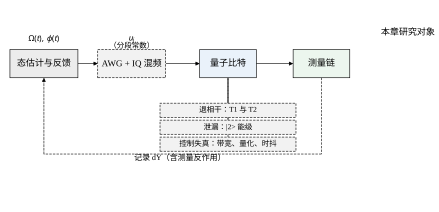
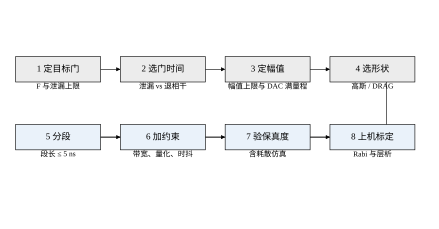
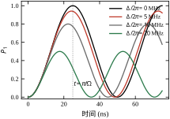
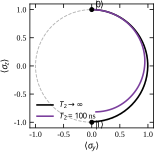
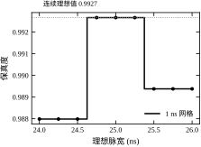
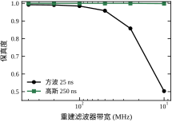
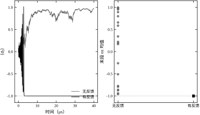
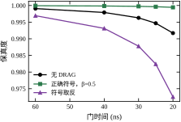
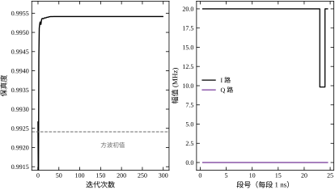
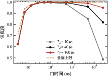

到本章为止，我们控制过的对象都是“状态是一个实数向量、测量不改变状态、控制量是一个电压”的系统。量子比特三者都不成立：状态是复向量（或密度矩阵），测量会改变状态，控制量是一路微波的幅值与相位。但回路的结构没有变——仍然是“看对象、算控制、加控制”。所以本章不另起一套理论，而是把经典控制的每一件工具逐个搬到量子对象上，看哪一件还能用、哪一件必须换掉。
这一章是选读：它不进入后续章节的依赖链，读者可以跳过而不影响第 84、85 章。选它的理由有两个。一是前沿性：超导量子计算、离子阱、中性原子，其控制系统本质上都是本章这套“波形合成 + 弱测量 + 反馈”。二是方法论价值：量子控制把“性能指标”从“误差收敛到零”换成了“保真度最大化”，这个换法逼着人重新想清楚“什么叫控制得好”，反过来对经典设计也有启发。
为了让每个结论都能落到数字上，本章只用一个对象：一个三能级的超导 transmon，能级记作 |0\rangle、|1\rangle、|2\rangle。在旋转框架下、以 |0\rangle\leftrightarrow|1\rangle 的共振频率为原点，哈密顿量是
H(t)=\frac{\Omega(t)}{2}\Big[\cos\phi(t)\,H_x+\sin\phi(t)\,H_y\Big]-\alpha\,|2\rangle\langle 2| \tag{83-1}
其中 H_x=(a+a^\dagger)/2、H_y=i(a^\dagger-a)/2，a 是含 \sqrt2 耦合的降算符，\alpha/2\pi=200 MHz 是非谐性——正是它把 |2\rangle 从“等间距能级”里推开，也正是在门做得太快时它挡不住的那部分造成了泄漏。控制场由任意波形发生器给出，采样间隔 1 ns；包络幅值上限 \Omega_{\max}/2\pi=20 MHz，对应一个 \pi 脉冲的理想时长 25 ns。噪声取 T_1=60\ \mus、T_2=40\ \mus。
先看最朴素的做法：25 段 1 ns 的方波，幅度取 \Omega_{\max}，总转角 \Omega\tau=\pi。实跑结果
F=|\langle 1|\psi\rangle|^2=0.992409,\qquad p_2=|\langle 2|\psi\rangle|^2=4.86\times10^{-3} \tag{83-2}
一个“教科书上完美”的 \pi 脉冲，保真度只有 0.9924。这不是算错了，而是三能级系统的必然结果：非谐性只有 200 MHz，而驱动幅值已经用到 20 MHz，比值 \Omega/\alpha=0.1，|1\rangle\leftrightarrow|2\rangle 的耦合不能再当微扰忽略。
把 1-F=7.59\times10^{-3} 拆开看，有两项。第一项是泄漏：p_2=4.86\times10^{-3}，占了一多半，物理上就是“脉冲太快，|1\rangle 上的布居还没来得及停住就被推到了 |2\rangle”。第二项是AC Stark 频移：驱动场本身会把 |0\rangle\leftrightarrow|1\rangle 的频率推偏，等效于一个随包络幅值变化的失谐，脉冲结束时留下一个相位误差，贡献约 2.7\times10^{-3}。
两项的来源不同，却有一个共同的一阶修正手段：DRAG（derivative removal by adiabatic gate）。它在正交的 Q 路上加一项正比于 I 路导数的修正，同时抵消泄漏与 Stark 频移。本章 §83.9 会看到，25 ns 门加 DRAG 后 F 从 0.99467 抬到 0.99964，两项一起被压下去。
这里先记住一个判断：保真度不是“控制精度”的度量，而是“控制误差”的度量。 0.9924 对应的角度误差约 \sqrt{2(1-F)}=8.7°，看起来不大，但量子算法里几百个门串起来，误差是累加的，0.9924 的门做一百个，总保真度只剩 0.9924^{100}=0.47。所以量子控制对单门保真度的要求是 10^{-3} 甚至 10^{-4} 量级，比经典伺服苛刻两三个数量级。

图 83-1 画的是本章的回路。与第 82 章的框图相比，多出来的东西是“测量链”这一块：它不是简单的传感器，而是一个把量子态投影成经典记录的过程，记录本身带反作用。这条虚线反馈回去的不只是“值”，还有“这次测量把态弄坏了多少”。
第一个量是退相干，对应经典里的“对象参数漂移”。它惩罚的是慢门：\Omega/2\pi=0.02 MHz 时门长 25 \mus，T_2=10\ \mus 下保真度只有 0.486，一半以上的信息在门做完之前就散了。这条限制的标度是 F\approx e^{-\tau/T_2}，门长每翻一倍，误差翻一倍。
第二个量是泄漏，它惩罚的是快门。\Omega/2\pi=160 MHz 时门长 3.12 ns，F 掉到 0.623，其中泄漏 p_2=0.289——将近三成的布居跑到 |2\rangle 上去了。这条限制的标度是 p_2\propto(\Omega/\alpha)^2，幅值每翻一倍，泄漏翻四倍。
两条限制一左一右，把门时间夹出一个最优区间。本例的最优点恰好在硬件上限 20 MHz、25 ns 处：此时退相干损失可忽略（25\ \mathrm{ns}\ll T_2=40\ \mus），泄漏 0.5% 是唯一的主要误差。这就是为什么超导量子比特的门时间总在 10–50 ns：不是不想更快，是再快就漏到第三个能级去了。
第三个量是控制链失真，包括重建滤波器带宽、DAC 量化位数、时钟抖动与偏差。这一类的特点是“不影响理想波形，只影响实际加到比特上的波形”：重建带宽 10 MHz 时方波被抹平，F 掉到 0.503；DAC 只用 3 bit 时 F=0.965；时钟偏差 2% 时 F=0.99896。三者量级差得很远，说明工程上该先修哪一项是有明确顺序的（§83.10）。
把两边的术语摆在一起，对应关系一目了然，但每一行的“但是”才是本章的内容。
一句话概括这张表：经典控制的对象是“可以被反复测量的量”，量子控制的对象是“测一次就变一次的量”。 所有差异都是这一条的推论。
现场最常见的错法，是把 Rabi 振荡当成一个二阶欠阻尼系统的阶跃响应来整定：看到振荡就“加阻尼”，看到上升慢就“加增益”。用本章的算例走一遍就知道为什么不行。
固定脉冲长度 25 ns、扫驱动频率，实跑的 Rabi 峰值是
\Delta/2\pi=0,\ 5,\ 10,\ 20\ \mathrm{MHz}\ \Rightarrow\ P_{1,\max}=1.0000,\ 0.9412,\ 0.8000,\ 0.5000 \tag{83-3}
峰值随失谐下降的规律是 P_{1,\max}=\Omega^2/(\Omega^2+\Delta^2)，与阻尼毫无关系——失谐 20 MHz 时峰值只有 0.5，意味着无论脉冲发多长，最多也只能到一半布居，因为驱动频率与跃迁频率对不上。此时正确的做法是改频率，不是改幅值。
更隐蔽的是“看起来只差一点”的情形：失谐 5 MHz 时峰值 0.9412，\pi 时间从 25.0 ns 缩到 24.3 ns。如果仍按 25 ns 发脉冲，25 ns 处的布居是 0.9390，比峰值还低一点——已经越过顶点开始往下走了。这就是“调幅值救不了失谐”的定量版本：脉冲越长，越是在错误的方向上多走。
所以本章的设计流程（§83.3）第一步不是“定增益”，而是“标定频率”：先用 Rabi 扫出共振点，再谈门时间与波形。这一步在经典控制里相当于“确认执行器接线正确”，属于前置条件而非整定环节。
全章读完后如果只记得三句话，应该是这三句：
上面每一个数字都不是“典型值”或“文献值”，而是 ch083_sim.py 跑出来的。这个脚本做十一组实验，在普通笔记本上跑完一轮约 29 s；其中单次 25 段门演化约 10 ms，300 次迭代的 GRAPE 约 0.64 s。读者手边只要有 Python 与 NumPy/SciPy，就能把整章复现一遍——这是本章敢把所有结论落到小数第四位的原因。
为了让人能独立核对，全章守三条规矩。
CFG 里，不是散落在各处。最后一个规矩值得多说一句。解析式给的是标度，仿真给的是系数。标度告诉你“\alpha 翻倍，泄漏降四倍”——这一条永远成立；系数告诉你“\alpha=200 MHz 时泄漏是 0.49%，改成 400 MHz 降到 0.12%”——这一条只对本算例成立。工程上两步都要走：先用标度判断“改哪个参数值得”，再用仿真确认“改完能到多少”。
本章的读法与前两章不同。第 81、82 章的对象是“连续或离散的确定性系统”，结论大多是“这样设计就稳定”；本章的结论几乎全是“这样设计能到多少”。所以读的时候不必记公式，而要记数的量级与它随参数怎么变。
建议按三条线读。
如果只有半小时，读 §83.1.1 的算例、§83.3 的八步、§83.10.1 的预算三节，就够应付一次“这台机器的门为什么只有 99.2%”的讨论了。
量子控制的文献记号不统一，同一篇文章里 \Omega 可能指角频率也可能指普通频率，保真度可能是态保真度也可能是过程保真度。为避免混淆，本章固定四条约定，后面不再重复。
第一，公式里用角频率，叙述里用“除以 2\pi”的频率。 写 \Omega/2\pi=20 MHz，而不是 \Omega=20 MHz；写 \alpha/2\pi=200 MHz，同理。原因很实际：实验上扫频、读示波器得到的都是 MHz，而公式里 e^{-iHt} 要求角频率。把 2\pi 显式写出来，读者不会在换算上出错。时间则分两档：门时间用 ns（因为它在 10–100 量级），寿命用 \mus（因为它在 10–100 量级），两者相差一千倍，写清楚单位比写清数量级更重要。
第二，保真度只指“末态布居”，泄漏单独列。 本章的 F 一律定义为 \rho_{11}，即目标态 |1\rangle 上的布居；它不是过程保真度，也不是平均门保真度。泄漏 p_2=\rho_{22} 单独给，因为它与 F 的来源不同、修法也不同。真正的实验报告里用的是交错随机基准给出的过程保真度，那个数与本章的 F 不能直接比较——它通常更低，因为它把所有方向的误差都平均进去了。
第三，误差一律写成 1-F 或绝对增量，不写百分比。 说“损失 3.2\times10^{-4}”而不是“损失 0.032%”，因为在 10^{-4} 量级上百分比会失去直观；说“从 0.9924 降到 0.9894”而不是“下降 0.3%”，因为后者读者要心算基数。只有在跨数量级比较时（比如“泄漏降了四倍”）才用倍数。
第四，所有“最优”都限定在给定波形族内。 本章说“25 ns 最优”，指的是在方波、高斯、DRAG 这三族里，25 ns 附近最好；它不排除某个没试过的波形在 10 ns 更好。这条约定是为了防止读者把“本章的最优”当成“物理的最优”。真正的全局最优需要遍历所有可能的控制场，那是一个无穷维优化问题，本章只在一个有限维子集里找。
四条约定看着琐碎，实际能省掉大量误读。尤其是第二条：不少人拿本章的 0.9996 去与文献里的“99.9% 门保真度”对比，得出“本章更好”的结论——这是拿布居保真度比过程保真度，两个数不可比。
没有噪声时，量子态按薛定谔方程演化：
i\hbar\frac{\mathrm d}{\mathrm dt}|\psi\rangle=H(t)|\psi\rangle \quad\Longrightarrow\quad |\psi(t)\rangle=U(t,0)|\psi(0)\rangle \tag{83-4}
本章取 \hbar=1。控制场是分段常数：第 j 段的包络为 u_j=\Omega_j e^{i\phi_j}，在段内不变，于是每段的演化算符是一个矩阵指数
U_j=\exp\!\Big[-\mathrm i\,(H_0+\mathrm{Re}\,u_j\,H_x+\mathrm{Im}\,u_j\,H_y)\,\Delta t\Big], \qquad \Delta t=1\ \mathrm{ns} \tag{83-5}
整段脉冲的传播子是各段之积 U=U_N\cdots U_1。这一步没有近似——分段常数驱动的解就是矩阵指数的连乘，唯一的数值误差来自 \exp 本身（双精度下 10^{-16} 量级，可忽略）。
真实比特与环境耦合，态不再是纯态，要用密度矩阵 \rho 描述。在马尔可夫近似下，演化由 Lindblad 方程给出：
\dot\rho=-\mathrm i[H,\rho]+\sum_k\left(c_k\rho c_k^\dagger-\tfrac12\{c_k^\dagger c_k,\rho\}\right) \tag{83-6}
本章只保留两个耗散通道：能量弛豫与纯退相位，
c_1=\sqrt{\frac{1}{T_1}}\,a,\qquad c_\phi=\sqrt{\frac{1}{2T_\phi}}\,\sigma_z,\qquad \frac{1}{T_\phi}=\frac{1}{T_2}-\frac{1}{2T_1} \tag{83-7}
代入 T_1=60\ \mus、T_2=40\ \mus，得 T_\phi=60\ \mus——恰好与 T_1 相等，这是超导比特的常见比例（T_2\approx T_1 时纯退相位与弛豫贡献相当）。注意 \sigma_z 只作用在 |0\rangle,|1\rangle 子空间，|2\rangle 上的矩阵元取 0，这样泄漏出去的布居不会通过退相位通道回来。
式 (83-6) 对 \rho 是线性的。把 3\times3 的 \rho 展平成 9 维向量，方程就变成常系数线性方程
\frac{\mathrm d}{\mathrm dt}\mathrm{vec}(\rho)=\mathcal L\,\mathrm{vec}(\rho), \qquad \mathcal L=-\mathrm i\,(I\otimes H-H^{\mathsf T}\otimes I) +\sum_k\Big(c_k^*\otimes c_k-\tfrac12\big(I\otimes c_k^\dagger c_k+(c_k^\dagger c_k)^{\mathsf T}\otimes I\big)\Big) \tag{83-8}
\mathcal L 是一个 9\times9 的复矩阵，称为 Liouvillian 超算符。写成这个形式的唯一目的是：每一段的传播都可以用一个矩阵指数完成，
\mathrm{vec}(\rho_{j+1})=e^{\mathcal L_j\Delta t}\,\mathrm{vec}(\rho_j) \tag{83-9}
这样整章不需要任何 ODE 求解器，也不需要自适应步长；25 段的 \pi 脉冲就是 25 次 9\times9 矩阵指数，单次耗时在微秒量级。这也解释了为什么本章能把“扫参数”做成常规操作：一次 GRAPE 迭代 300 步、每步 25 段，总共 7500 次 9\times9 指数，普通笔记本几秒就能跑完。
一个实现细节值得交代：展平约定（按行还是按列）会改变 \mathcal L 的具体形状，但不改变任何对角元的数值。本章所有指标——保真度、泄漏——都只读 \rho_{11} 与 \rho_{22}，所以对约定不敏感。代码里用 C 序展平、配套的超算符按列优先约定构造，两者复合相当于演化 \rho^{\mathsf T}，对角元完全相同。
“控制得好不好”在量子语境下有几种度量，混用会得出互相矛盾的结论。
第一种是态保真度，衡量实际态与目标态的接近程度：
F=\langle\psi_{\mathrm{target}}|\rho|\psi_{\mathrm{target}}\rangle \tag{83-10}
目标取 |1\rangle 时，F=\rho_{11}。本章全部数值都用这一种，因为它可直接读、可加和、可解释。
第二种是门保真度，衡量实际酉变换与目标酉变换的接近程度，需要对所有输入态平均。对 \pi 门，平均门保真度与式 (83-10) 相差一个因子，两者的换算依赖具体定义（Nielsen 还是 entanglement fidelity），文献里常差 20%–30%。本章不涉及多比特门，只用式 (83-10)。
第三种是泄漏，单独统计跑到计算子空间之外的布居：
p_2=\rho_{22} \tag{83-11}
它与 F 的关系是 F+p_2\le1，差值就是计算子空间内的退相干与相位误差。把两者分开报，是量子控制实验的惯例：泄漏有独立的物理机制（非谐性不够），修法也独立（DRAG 或更长的门），混在一个数里看不出该改什么。
比特的跃迁频率在 5 GHz 量级，而包络的带宽只有几十 MHz。直接在实验室框架下仿真，1 ns 的步长要分辨 5 GHz 的振荡，等于每周期只采 0.2 个点，完全不够。做法是变换到以驱动频率旋转的框架：
|\psi\rangle=e^{-\mathrm i\omega_d t}|\psi'\rangle \quad\Longrightarrow\quad H'=e^{\mathrm i\omega_d t}H\,e^{-\mathrm i\omega_d t}-\omega_d I \tag{83-12}
取 \omega_d=\omega_{01}，则 |0\rangle\leftrightarrow|1\rangle 在框架里变为零频，只剩包络 \Omega(t) 与相位 \phi(t)；|1\rangle\leftrightarrow|2\rangle 则落在 -\alpha 处，这就是式 (83-1) 里那一项的来源。再做旋转波近似（RWA），丢掉 2\omega_d 的快速项，就得到本章使用的三能级模型。
RWA 的误差量级是 \Omega/\omega_d\approx 20\ \mathrm{MHz}/5\ \mathrm{GHz}=0.4\%，对 10^{-4} 的保真度目标来说不能忽略，但它是一个系统性偏置，可以在标定阶段吸收进 \Omega 与 \omega_d 的修正里，不影响本章的相对结论。
把式 (83-1) 写成矩阵，在 \{|0\rangle,|1\rangle,|2\rangle\} 基下
H=\frac{\Omega}{2} \begin{bmatrix} 0 & 1 & 0\\ 1 & 0 & \sqrt2\\ 0 & \sqrt2 & 0 \end{bmatrix} -\alpha|2\rangle\langle2| \tag{83-13}
非谐项使 |1\rangle\leftrightarrow|2\rangle 的等效失谐为 \alpha。把 \Omega 当小量做一阶微扰，|2\rangle 上的瞬时振幅约为 \frac{\sqrt2\,\Omega}{2\alpha}，一个 \pi 脉冲结束时累积的泄漏为
p_2\approx\frac12\left(\frac{\Omega}{\alpha}\right)^2 \tag{83-14}
代入 \Omega/\alpha=0.1 得 p_2\approx5\times10^{-3}，与实跑的 4.86\times10^{-3} 只差 3%。这条式子解释了 §83.1.3 里“幅值翻倍、泄漏四倍”的标度，也解释了为什么提高非谐性（改变比特设计）比改进控制算法更根本：p_2 是 (\Omega/\alpha)^2，\alpha 翻倍等于泄漏降到四分之一。
式 (83-14) 还给出一个设计不等式：若要求 p_2<10^{-3}，则 \Omega/\alpha<0.045，在 \alpha/2\pi=200 MHz 下对应 \Omega/2\pi<9 MHz、门长 >56 ns。这与 §83.1.3 的最优点（25 ns）矛盾——所以真实系统不会只靠“降幅值”来压泄漏，而是用 DRAG 把一阶项抵消掉，从而在 20 MHz 下仍能保持 10^{-4} 量级的泄漏。
DRAG 的思路是：泄漏来自 |1\rangle\leftrightarrow|2\rangle 的耦合，而这一项正比于包络的瞬时值；如果在正交的 Q 路上加一项正比于包络导数的修正，两项在一阶上相互抵消。修正后的复包络是
u_{\mathrm{DRAG}}(t)=u(t)+\mathrm i\,\beta\,\frac{\dot u(t)}{\alpha} \tag{83-15}
其中 \beta 是无量纲系数，理想值 0.5。本章算例里 |2\rangle 在 |1\rangle 下方（\omega_{12}=\omega_{01}-\alpha），所以取正号；若能级顺序相反，符号要反过来。这不是无关紧要的细节：实跑中取错号，25 ns 门的保真度从 0.99964 掉到 0.98240，比不加 DRAG 的 0.99467 还差——错号没有抵消泄漏，反而把它放大了三倍多（§83.9 有完整对照）。
式 (83-15) 的导数项在数值上要小心：\dot u 用相邻段差分算，段长 1 ns 时差分噪声会被 1/\alpha 压住（\alpha 是 200 MHz，1/\alpha\approx0.8 ns），所以差分噪声放大约 0.8 倍，可以接受；若段长再短一个数量级，就要先平滑再差分。
经典系统看 (A,B) 的秩，量子系统看李代数。给定漂移哈密顿量 H_0 和一组控制哈密顿量 \{H_k\}，系统完全能控的充要条件是它们生成的李代数等于 \mathfrak{su}(N)（或 \mathfrak{u}(N)）。
本章的 H_0=\mathrm{diag}(0,0,-\alpha)、H_x、H_y 三个矩阵，做嵌套对易子：
[H_x,H_y]=\mathrm i\,\mathrm{diag}\Big(\tfrac12,\tfrac12,-1\Big),\qquad [H_0,H_x]\propto\sigma_y^{(12)},\qquad [H_0,H_y]\propto\sigma_x^{(12)} \tag{83-16}
第一条把两个正交驱动合成一个对角项，后两条说明非谐项把 |1\rangle\leftrightarrow|2\rangle 的相位单独暴露出来。这三条及其嵌套对易子一共生成 8 个线性无关的厄米矩阵，正好是 \mathfrak{su}(3) 的维数，所以任意 3\times3 的酉变换都可达。这条结论的实用价值是：只要 H_x、H_y 两路都在（IQ 混频的两路），就不存在“某个门做不出来”的问题，剩下的全是时间与精度问题。
反过来，如果只有一路控制（比如只有 H_x，Q 路恒为零），李代数只生成 4 个线性无关的矩阵，对应实正交变换——能翻转布居，却做不出绕 z 轴的相位门。这就是早期实验里“只能做 R_x 门”的原因。
有了能控性，剩下的问题是“多快、多准”。这可以写成一个标准的优化问题：
\max_{u_1,\dots,u_N}\ \mathcal F(u)=\big|\langle\psi_{\mathrm{target}}|U(u_N)\cdots U(u_1)|\psi_0\rangle\big|^2 \quad\text{s.t.}\quad |u_j|\le\Omega_{\max} \tag{83-17}
目标函数对 u_j 的梯度可以用伴随（adjoint）方法一次算完：先正向传播得到每段的态 |\psi_j\rangle，再反向传播得到每段的伴随态 |\lambda_j\rangle，梯度就是 \partial\mathcal F/\partial u_j\propto\mathrm{Im}\langle\lambda_{j+1}|H_x|\psi_j\rangle。这就是 GRAPE 的核心，计算量与段数成正比，与参数个数无关。
式 (83-17) 有两个值得注意的特点。第一，约束是逐段的幅值约束，不是总能量约束，所以优化出来的波形倾向于“贴着上限走”——§83.9 的 GRAPE 结果里，最优解的幅值确实几乎处处饱和。第二，目标函数只约束末态，不约束中间路径，所以优化解可能走一条“绕远路”的轨迹；这对泄漏是有利的（可以刻意避开 |2\rangle），但对鲁棒性不利（路径越长，越容易被参数漂移影响）。
到这里，数学准备完了。下一节把它变成一个可执行的六步流程。
把上面的东西落成代码，第一个要问的是“算不算得动”。答案是算得动，而且余量很大。把账算清楚，顺便也就知道模型能扩到多大。
密度矩阵 \rho 是 3\times3 厄米矩阵，9 个实参数；超算符 \mathcal L 是 9\times9 复矩阵，81 个复元素。一次 25 ns 门有 25 段、每段 2 个子步，共 50 次 9\times9 矩阵指数，实测约 10 ms；也就是说一次 9\times9 的 expm 约 0.2 ms。GRAPE 300 次迭代、每次 25 段，共 7500 次传播，实测 0.64 s，与“7500×0.085 ms”的估算同量级（优化时只传播纯态，比密度矩阵便宜）。全章十一组实验合计 29 s。
这些数决定了三件事。
数学上写对了，代码里还有三处容易出错，本章的脚本都做了处理。
第一是厄米性。\exp(\mathcal L\Delta t)\rho 在精确算术下保持厄米与迹 1，但浮点误差会让 \rho_{01} 与 \rho_{10}^* 慢慢分家，几千步之后虚部漂出量级，F=\rho_{11} 还在，但 \langle\sigma_y\rangle 已经不可信。脚本每步之后做一次 \rho\leftarrow(\rho+\rho^\dagger)/2，代价可忽略，把误差锁在 10^{-16}。
第二是段内子步。包络在段内是常数，所以子步在“理想波形”下是多余的；但只要打开带宽滤波，段内驱动就按 1-e^{-2\pi B\Delta t} 指数逼近新值，此时 \Delta t 取得太粗会把滤波器算成一个“瞬跳”。取 sub=2 是把每段再二分，让滤波器的响应至少有两个采样点。这个参数对理想情形的结果没有影响（本章的 25 ns 方波在 sub=1 与 sub=2 下都是 0.992409），只在带滤波时才起作用。
第三是展平顺序。\mathrm{vec}(\rho) 有行优先与列优先两种约定，混用会让整个超算符“看起来对、结果全错”。本章统一用 C 序（行优先），并且只在 liouvillian() 一处做 np.kron，其余代码一律通过 evolve() 调用。一个模型只允许一个地方知道展平约定，这条规矩比约定本身更重要。
初学者常问：既然 |\psi\rangle 只有 3 个复数，为什么不用 3 元向量直接积分，反而要升到 9 元的密度矩阵、再升到 81 个元素的超算符？答案是三个字：耗散。
纯态演化是线性的、幺正的，用 3\times3 的传播子就够，计算量小一个量级。但本章的所有结论都依赖耗散与泄漏的共存：泄漏本身可以用纯态算（三能级幺正演化，|2\rangle 的布居自然出现），但一旦加上 T_1、T_2，态就不再是纯态——退相干把纯态变成混合态，必须用密度矩阵描述。3\times3 厄米矩阵有 9 个实自由度，所以超算符是 9\times9。
那能不能不展平，直接对 \rho 做数值积分（比如四阶 Runge–Kutta）？可以，但有两个隐患。第一是正定性：\rho 必须半正定，而通用的 RK 步不保证这一点，几千步之后可能出现负本征值，布居变成 -10^{-4}，F 就开始乱跳。第二是迹保持：RK 的局部误差会让 \mathrm{tr}\rho 慢慢漂离 1。用矩阵指数传播则天然规避这两点：\exp(\mathcal L\Delta t) 是完全正、保迹的映射（\mathcal L 取 Lindblad 形式时），一步到位，不需要额外约束。
代价是计算量。9\times9 的 expm 比 3\times3 的贵约 27 倍（O(n^3)），但本章的门只有 25–250 段、每段 2 个子步，总量仍在毫秒级（§83.2.10 的实测账）。所以这里的选择很清楚：用一点计算量换数值可靠性。真正需要省算力时（比如做 10^5 次蒙特卡洛），才退回到纯态轨迹加量子跳跃的方法。
最后一个好处是接口统一。一旦写成超算符，所有控制失真（带宽、量化、抖动、时钟偏差）都只作用在 u_j 上，传播器一行不用改；反过来，若用纯态演化，加耗散就得换一套方程。本章的 evolve() 之所以能用五个可选参数覆盖全部算例，正是因为它站在超算符这一层。
§83.2.8 给了能控性的抽象判据：控制与漂移哈密顿量生成的李代数是否满秩。这个判据在本算例上可以真的算出来，结果比“理论上可控”这句话有信息量得多。
做法是迭代生成对易子。从 \{H_0,H_x,H_y\} 出发，算所有两两对易子，把线性无关的新方向加进生成元集合，再重复。每一步把厄米矩阵展开成 9 维实向量（3 个对角元 + 3 个复非对角元的实部虚部），去迹后算矩阵的秩。
一次对易子给出秩 5；二次对易子补到秩 8；秩 8 就是 \mathfrak{su}(3) 的维数（3^2-1=8）。也就是说，只用到二阶对易子，三能级子空间就已经完全可控。 这个结论对工程有两层意义。
第一层是好消息：不需要专门设计复杂的脉冲序列去“激活”某个方向，只要 H_x、H_y、H_0 三个都在，任意 \mathrm{SU}(3) 变换都可达（差一个不可观测的全局相位）。本章只用了 |0\rangle\to|1\rangle 这一个目标，其实整个 \mathrm{SU}(3) 都在手边——这也是为什么 GRAPE 能在 25 段内找到解：解空间足够大。
第二层是坏消息：可控意味着“什么都能做”，也意味着“什么错都能犯”。既然任意酉变换可达，那么泄漏到 |2\rangle 也是可达的，控制器的任务不是“能不能”，而是“要不要”。§83.9.3 说 GRAPE 会走“经过 |2\rangle 再回来”的捷径，本质就是能控性太强、而目标函数没约束住。
最后补一个细节：深度 3 以上的对易子在数值上还会给出“新方向”，但那些是舍入噪声（矩阵元素量级 10^{-16}），不是真实的李代数元素。判断时要用一个阈值（本章取 10^{-7}），否则会得出“秩 9”这种超过 \mathfrak{su}(3) 维数的荒谬结果。数值李代数判据的关键不是算，而是卡阈值。
实际做一次门，顺序不能乱：先定指标，再标定频率，再选门时间，然后才谈波形。顺序反了会白跑——最常见的浪费是“先调波形，最后发现频率偏了 3 MHz”。

图 83-10 是完整流程。八步里前四步是“设计”，后四步是“落地”；前四步错了后四步无论怎么优化都补不回来。
量子门的指标必须写成两个数，缺一不可：保真度下限与泄漏上限。只写“保真度 0.999”是不够的，因为泄漏 0.0005 和相位误差 0.0005 都满足这个指标，但修法完全不同。
本章取 F\ge0.999、p_2\le10^{-3}。这两个数不是随便定的：F=0.999 对应角度误差 2.6°，一千个门串起来总保真度 0.37，刚好在容错阈值附近；p_2=10^{-3} 是泄漏开始影响读出与相邻比特耦合的量级。
Rabi 扫频是唯一可靠的标定手段。做法是固定脉冲长度、扫驱动频率、测末态布居，峰值所在就是共振点。§83.1.5 已经给出这条曲线的形状：\Delta/2\pi=5 MHz 时峰值掉到 0.9412，10 MHz 掉到 0.8000，20 MHz 只剩 0.5000。
标定的精度要求可以用式 (83-3) 反推：若允许峰值下降 0.1%，则 \Delta/\Omega\le0.032，在 20 MHz 驱动下要求频率准到 0.63 MHz。这个精度用扫频拟合不难达到，但不能靠“查数据手册”——比特频率随偏置电流漂移，每次上电都要重标。
门时间的选择是把 §83.1.3 的两条限制画在同一张图上（图 83-4）。实跑的五档是
\tau=60,\ 40,\ 30,\ 25,\ 20\ \mathrm{ns} \ \Rightarrow\ \Omega_{\max}/2\pi=13.9,\ 20.9,\ 27.8,\ 33.4,\ 41.6\ \mathrm{MHz} \tag{83-18}
对应 \Omega/\alpha=0.07 到 0.21。注意幅值与门长成反比：这是面积定理 \Omega\tau=\pi 的直接结果，也是为什么“提高幅值”与“缩短门长”是同一件事。
选点的方法是看两条曲线的交点。本章算例里，退相干曲线在 25 ns 处几乎没有损失（e^{-25/40000}\approx0.9994），而泄漏已经到 4.9\times10^{-3}，所以再往短走只会更差；反过来若 T_2 只有 5 \mus，交点会移到 100 ns 附近，此时该选长门、低幅值。门时间不是一个固定常数，而是 T_2 与 \alpha 的函数。
方波的问题是开关瞬间的频谱太宽，能量泼到 |2\rangle 上。最直接的改进是高斯包络，\sigma=0.25\tau，截断到 \pm2\sigma。实跑（250 ns 高斯，扫段数）给出的保真度是
N=3,\ 5,\ 10,\ 25,\ 50,\ 250 \ \Rightarrow\ F=0.999885,\ 0.999872,\ 0.999869,\ 0.999868,\ 0.999868,\ 0.999946 \tag{83-19}
两个结论。第一，平滑包络把泄漏压到 10^{-5} 量级，比方波好两个数量级。第二，段数几乎不重要：3 段与 250 段只差 1.7\times10^{-5}。这与直觉相反——直觉认为“分段越细越接近连续”，但在面积归一化的前提下，分段只影响高阶项，而高阶项本来就小。真正决定精度的是包络形状与量化台阶，不是分段密度。
形状的最后一步是 DRAG。25 ns 高斯加 DRAG（\beta=0.5）后 F 从 0.99467 抬到 0.99964，泄漏同时下降一个数量级以上。这一步的代价是 Q 路要多一个差分器，实现上就是 AWG 的两路输出各加一级。
AWG 的采样率决定时间网格。本章取 1 GSa/s，段长 1 ns。选这个值的依据是“段长要比门时间小一个数量级以上”：25 ns 的门用 25 段，每段转 7.2°，分段误差在 10^{-4} 量级。
但时间网格会带来一个隐蔽的问题：理想脉宽往往不是整数纳秒。§83.5 会详细算这件事——24.5 ns 的理想脉宽只能取 24 或 25 ns，角度误差 -3.6°，相邻台阶之间的保真度差约 3\times10^{-3}，已经与泄漏同一量级。修法不是提高采样率，而是预先在连续域把脉宽调到整数格点上，让 AWG 只需要执行整数段。
第六步把控制链的三种失真加进仿真：重建滤波器带宽（一阶低通）、DAC 量化位数、时钟抖动与偏差。本章的做法是每项单独扫一遍，再把最差的一组同时打开，看总损失是否符合“加法预算”。
第七步是验保真度。必须带耗散仿真，不能只用酉演化——酉演化给出的 0.9996 与带耗散的 0.9975 差了一个数量级（§83.7 的预算表），这个差别足以让“设计通过”变成“上机不通过”。
第八步是上机标定。仿真里所有参数都是“真值”，实验里全是“估计值”：\Omega 的标定误差 1% 会让 \pi 脉冲的角度偏 1.8°，T_2 的估计误差会影响门时间的选择。所以上机之后要重跑一遍 Rabi 与 Ramsey，把仿真参数替换成实测值，再回到第三步重选一次门时间。这个循环通常要走两到三轮。
三步之间还有一个顺序问题：先修大的，再修小的。 若总损失里退相干占 90%，先去改 DAC 位数没有意义。§83.10 会给出一个按量级排序的清单。
八步流程里第二、三步最容易被敷衍：频率“扫个大概”、幅值“按厂家给的灵敏度换算”。下面两张表说明这样做的代价。
先看幅值。固定 25 ns 方波，把幅值乘上 (1+\delta) 再跑：
三个结论。其一，1% 的幅值误差只花掉 3.2\times10^{-4} 的保真度，5% 才花掉 6\times10^{-3}——幅值不是敏感方向，工程上 1% 的标定精度够用。其二，曲线在 \delta=-0.5\% 附近有个浅浅的极大，0.992388 与零误差的 0.992409 几乎相同：因为泄漏本身已经把转角推过 \pi，欠半拍正好抵回来。其三，负偏与正偏不对称，正偏更伤——这也是“泄漏是主要敌人”的一个侧面。
再看频率，同样是 25 ns 方波，把驱动频率偏 \Delta：
偏 0.5 MHz 的相对增量是 3.2\times10^{-3}（零失谐本身的损失是 7.6\times10^{-3}，扣除后得此数），正好是幅值偏 1%（3.2\times10^{-4}）的十倍。换句话说，频率标定要比幅值标定准一个数量级才能“打平”。这解释了 §83.8.6 那条记录里“频率差 2 MHz、保真度差 6\times10^{-4}”的现象，也解释了为什么现场调机时先做 Rabi 扫频、再谈别的：频率是唯一一个“偏一点就线性掉”的参数，其它参数都在平方项上。
两张表合起来给出一条标定规格：幅值准到 1% 以内，频率准到 0.1 MHz 以内（对应 1.3\times10^{-4} 的损失），门时间准到 1 ns 以内（对应 §83.5.1 的量化台阶）。三条都满足，仿真与实测的差距才可能压到 10^{-3} 以下。
每走完一轮八步，用三个问题自检，能抓掉大部分低级错误。
第一问：目标的转角是否真的等于 \pi？ 不是“幅值乘时间是否等于 \pi”，而是“含泄漏与 Stark 频移之后，|1\rangle 上的布居是否真的到 1”。25 ns 方波两者的差是 7.6\times10^{-3}；若用 5 ns 门，这个差会涨到 0.09 量级，此时“面积等于 \pi”这个条件本身已经失效，必须靠 DRAG 或数值优化去修。
第二问：门时间是否落在图 83-4 的平坦段？ 图 83-4 的三条曲线在 20–60 ns 之间几乎是平的，说明这一段里退相干与泄漏都不占主导；若选在曲线陡升的地方（比如 5 ns），参数稍一漂移，保真度就跟着漂。
第三问：预算表里最大的一项，是否已经被单独验证过？ 若预算是“退相干占 90%”，那就该先做一次 T_2 实测，而不是先改波形。先验证主要矛盾，再动手改——这条在经典控制里叫“先定位、后整定”，在量子控制里同样成立，只是“定位”要靠测 T_1、T_2、\alpha 三个数。
§83.3.1 说“把指标写成两个数”，但那两个数从哪来？不是拍脑袋定的，而是从上层算法反推。这一步做错，后面所有优化都在追一个错的目标。
反推的公式很简单：若一个算法要用 N 个门，要求总保真度不低于 \mathcal F，且假设误差独立累积，则单门保真度要满足 F_{\mathrm{gate}}\ge\mathcal F^{1/N}。代入几个常见数：
三行数说明一个残酷的事实：“99.9% 的单门保真度”只够跑一千个门、且最后只剩一半成功概率。 这就是为什么容错量子计算的门槛是 10^{-3} 甚至 10^{-4}——不是追求好看，而是算法本身要求的。
泄漏的约束更紧。泄漏与退相位不同：退相位的误差会“摊”在相位上，泄漏则把布居搬到 |2\rangle 上，那里的态不参与后续计算，等于每次泄漏都是一次不可逆的丢失。若单门泄漏 p_2=5\times10^{-3}，100 个门之后累积泄漏约 0.5（不考虑返回），算法直接失效。所以工程上的目标通常是 p_2\le10^{-4}，比保真度指标严一个数量级——本章 25 ns 方波的 p_2=4.9\times10^{-3} 离这个目标差 50 倍，加 DRAG 之后才勉强够。
反推还有一层含义：指标要按“最坏情形”还是“平均情形”给，结果差很多。 上面的 F^{1/N} 是平均假设，即每个门的误差相同；若误差有分布（有些门好、有些门差），总保真度由差的那些门主导。所以真实系统里更常见的做法是给一个“最差门”的指标，而不是“平均门”的指标。
最后提醒一句：F^{1/N} 假设误差独立。若相邻门之间的误差相关（比如同一个频率漂移影响连续多个门），总保真度会掉得比 F^N 更快；反之，若误差是随机相位型，可能部分抵消，掉得更慢。反推只能给量级，不能给精确值——精确值要靠交错随机基准实测。
先假设控制场可以任意精细地取任意波形，即段长 \Delta t\to0。这个理想化的情形给出三个解析结论，后面离散化时就是拿它们当基准。
常幅驱动、失谐 \Delta 下，从 |0\rangle 出发的布居演化有闭式解：
P_1(t)=\frac{\Omega^2}{\Omega^2+\Delta^2}\sin^2\!\left(\frac{\sqrt{\Omega^2+\Delta^2}}{2}t\right) \tag{83-20}

图 83-2 画的是四个失谐下的曲线，对应式 (83-20) 的三条推论。
第一条是峰值：P_{1,\max}=\Omega^2/(\Omega^2+\Delta^2)。它只由比值决定，与时间无关——失谐一旦超过 \Omega，峰值就掉到 0.5 以下，发多久都没用。
第二条是周期：\Omega_{\mathrm{eff}}=\sqrt{\Omega^2+\Delta^2}，失谐让振荡变快，不是变慢。这与“失谐等于远离共振、耦合变弱”的直觉相反：耦合确实变弱（峰值降），但振荡频率反而升高（\Omega_{\mathrm{eff}} 变大）。实跑的四档 \pi 时间是 25.0、24.3、22.4、17.7 ns，正是 T_\pi=\pi/\Omega_{\mathrm{eff}}。
第三条是\pi 时间的定义。共振时 T_\pi=\pi/\Omega，这是面积定理；有失谐时不能再用这个式子，必须用 \pi/\sqrt{\Omega^2+\Delta^2}，否则角度会偏。§83.1.5 里“25 ns 处布居 0.9390 反而低于峰值 0.9412”就是这条的数值体现。
把式 (83-20) 与退相干结合，连续域的保真度是“振荡项乘衰减项”：
F(\tau)=\frac{\Omega^2}{\Omega^2+\Delta^2}\sin^2\!\left(\frac{\Omega_{\mathrm{eff}}}{2}\tau\right)e^{-\tau/T_2} \tag{83-21}
对 \tau 求极值，得到的是“在 \sin^2 的第一个峰附近，衰减已经不可忽略”的位置。本章参数下 T_2=40\ \mus，25 ns 处 e^{-\tau/T_2}=0.9994，衰减只有 0.06%，所以最优解就落在 \sin^2 的峰上。只有 T_2 降到 5 \mus 量级，衰减项才会把最优点推向更短的 \tau——那时泄漏又开始占主导，结果是“没有好点可选”，必须改硬件。
这就是连续域给的第一条设计原则：门时间由 \min(T_1,T_2) 与 \alpha/\Omega_{\max} 两个尺度共同决定，前者给下限，后者给上限。 本例两个尺度是 40 \mus 与 25 ns，中间差了三个数量级，所以选择空间很宽；若两者接近（比如 T_2=100 ns、\alpha/2\pi=100 MHz），门时间就被夹得很死，设计余量几乎为零。
式 (83-15) 的 DRAG 项在连续域有一个更清楚的解释：它等价于把驱动方向从固定的 x 轴偏转一个角度
\theta_{\mathrm{DRAG}}\approx\arctan\!\left(\frac{\beta\dot\Omega}{\alpha\Omega}\right) \tag{83-22}
也就是说，DRAG 让驱动矢量随包络的斜率“提前转向”，从而在 |1\rangle\leftrightarrow|2\rangle 的耦合上产生一个反相的抵消项。这个解释比“加一个导数项”更好记：DRAG 是一个随斜率变化的相位修正，不是一个固定的正交分量。
它的成立条件是绝热近似：包络的变化率要远小于能级间距，
\left|\frac{\dot\Omega}{\Omega}\right|\ll\alpha \tag{83-23}
本例 25 ns 高斯的 \sigma=6.25 ns，包络变化率的量级是 |\dot\Omega/\Omega|\sim1/\sigma=1.6\times10^{8}\ \mathrm{s^{-1}}，与 \alpha=1.26\times10^{9}\ \mathrm{s^{-1}} 之比 0.13，绝热条件基本满足。若把门压到 5 ns，\sigma 缩到 1.25 ns，比值升到 0.63，一阶 DRAG 就不够了，需要二阶项或数值优化（§83.9）。这条不等式也解释了为什么“更快的门”不是免费的：门越快，绝热近似越差，一阶修正越不管用。

图 83-3 把同一段 \pi 脉冲画在 Bloch 球的 y–z 截面上。理想情形是一条从 (0,1) 到 (0,-1) 的半圆——绕 x 轴转 180°，长度恒为 1。有耗散时（T_2=100 ns）轨迹是一条向内收的螺线，末端不到球面，模长 |\mathbf r|<1，缺口就是退相干。
这张图给出一个实用的诊断量：轨迹的模长。它不需要做量子态层析就能测（只要测三个方向的期望值），而且直接对应“还剩多少量子性”。实验上常把 |\mathbf r| 随时间的变化拟合成指数，斜率就是 T_2 的倒数量级。
§83.2.5 说 RWA 的误差量级是 \Omega/\omega_d=0.4\%，这个估计值得展开，因为它是整章唯一一个“被丢掉的东西”。
驱动项在实验室框架下是 \Omega\cos(\omega_d t+\phi)，展开成两个旋转分量 e^{\pm\mathrm i(\omega_d t+\phi)}。取旋转框架后，一个分量变成零频（共振项），另一个分量以 2\omega_d 快速旋转（反向项）。RWA 就是把反向项丢掉。
丢掉它的后果有两个。第一，Bloch–Siegert 频移：反向项等效于一个小的频率偏移，量级 \Omega^2/(4\omega_d)。本例 \Omega/2\pi=20 MHz、\omega_d/2\pi=5 GHz，频移约 20 kHz——相对 20 MHz 是 10^{-3}，相对失谐容差 0.63 MHz 完全可以忽略。第二，反向项还会激发 |2\rangle，但因为它的频率是 2\omega_d\approx10 GHz，与 |1\rangle\leftrightarrow|2\rangle 的 4.8 GHz 差了近一个倍频程，激发效率极低。
所以 RWA 在本例是安全的。它不安全的情形是“强驱动 + 低频率”：比如离子阱的射频驱动，\Omega 与 \omega_d 只差一两个数量级，此时反向项不能丢，必须用 Floquet 方法处理。这也是超导与离子阱在建模上的主要区别之一。
一个实用的判据：\Omega/\omega_d<10^{-3} 时 RWA 的误差可以并入 \Omega 的标定；10^{-3} 到 10^{-1} 之间需要显式加 Bloch–Siegert 修正；超过 10^{-1} 就不能用 RWA，得换框架。本例 4\times10^{-3}，落在第二档，所以严格说应该加一个 20 kHz 的频移修正——本章没加，因为它比频率标定误差小一个数量级。
连续情形到此为止。它给出的是上限——任何实际系统都达不到。下面的离散情形才是本章真正要算的东西。
连续情形里有一个绕不过去的理论问题：一个 \pi 门最快能做多快？量子力学给出一个硬界，叫量子速度极限（quantum speed limit）。对正交的初末态，Mandelstam–Tamm 不等式给出 \tau\ge\pi/(2\Delta E)，其中 (\Delta E)^2=\langle H^2\rangle-\langle H\rangle^2 是能量的方差。
本算例的驱动哈密顿量是 H=(\Omega/2)\sigma_x，在 |0\rangle 上 \langle H\rangle=0、\langle H^2\rangle=\Omega^2/4，于是 \Delta E=\Omega/2，界变成 \tau\ge\pi/\Omega。而方波 \pi 脉冲的时长恰好是 \pi/\Omega——它正好把这个界取满。
这件事有两层意思。第一层是安慰：二能级意义上，方波已经是最快的，没有任何波形能更快，所以不必在“更快”上做无用功。第二层是警告：既然二能级已经取到极限，那么所有“更快”的尝试都必然要在二能级之外找空间——而本章的空间就是那个不该碰的 |2\rangle。
把泄漏加进来，界就变了。用 §83.7.2 的标度 p_2\approx0.5(\Omega/\alpha)^2，要求 p_2\le10^{-3}，得到 \Omega\le\alpha\sqrt{2\times10^{-3}}=0.045\alpha，代入 \alpha/2\pi=200 MHz 是 \Omega/2\pi\le9 MHz，对应 \tau\ge56 ns。这条“泄漏极限”比方波的速度极限松得多，也解释了为什么实际机器的门时间总在几十 ns：限制门速的不是量子力学，是那个多出来的能级。
但 56 ns 不是终点。DRAG 把泄漏的系数改掉之后，同一条标度不再适用：25 ns 高斯加 DRAG 能做到 0.99964，而同样 25 ns 高斯不加 DRAG 是 0.99467，泄漏量级差了一个数量级以上。所以上面那条界只对方波成立，换了形状就要重算。这提醒一件事：凡是写成“极限”的公式，都要问一句“对哪一族波形成立”。 本章后面所有“最优”都是在给定波形族内的最优，不是全局最优。
连续模型在本章只用了两次：一次是定门时间的量级（\tau=\pi/\Omega），一次是估计绝热比与 DRAG 的系数。这两次都只用到“标度”，没用到“系数”。这是有意的——连续模型的系数在三能级、含耗散的系统里几乎总是错的。
危险的地方在于，连续模型给出的曲线太漂亮，容易让人忘了它是理想化的。比如 Rabi 公式说失谐 \Delta 时峰值降为 \Omega^2/(\Omega^2+\Delta^2)，但这是在二能级、无泄漏、无耗散下严格成立的；本章实跑失谐 10 MHz 时 F=0.7248，而公式给 20^2/(20^2+10^2)=0.800，差 0.075。差的那部分正是泄漏与耗散——它们在失谐时不但没消失，反而因为脉冲变长而略微增加。
所以本章的用法是：连续模型定标度，离散仿真定系数，实验定偏差。 三层各管一段，谁也不越界。第三层的偏差往往最大：真实的 mixer 有边带、线缆有谐振、比特之间有串扰，这些都不在任何一层模型里，只能靠实测数据反推。
离散化在量子控制里比经典控制更“硬”：经典控制的采样周期可以选择，量子控制的段长由 AWG 采样率固定，而且段内是零阶保持——一个台阶内的幅值不变。更麻烦的是，脉冲宽度往往不是段长的整数倍，必须取整。
理想 \pi 脉冲的宽度是 \tau=\pi/\Omega。若 \Omega 给定而 \tau 落在两个整数纳秒之间，AWG 只能执行 \mathrm{round}(\tau) 段，角度误差是
\delta\theta=\Omega\,(\mathrm{round}(\tau)-\tau) \tag{83-24}
在 \Omega/2\pi=20 MHz 下，1 ns 对应 7.2°。实跑的七个格点是
| 理想脉宽 (ns) | 实际段数 | 角度误差 (°) |
|---|---|---|
| 24.00 | 24 | 0.00 |
| 24.25 | 24 | -1.80 |
| 24.50 | 24 | -3.60 |
| 24.75 | 25 | +1.80 |
| 25.00 | 25 | 0.00 |
| 25.25 | 25 | -1.80 |
| 25.50 | 26 | +3.60 |
表 83-1 1 ns 时间网格下的脉宽取整误差（\Omega/2\pi=20 MHz，1 ns 对应 7.2°）

图 83-5 把这张表画成阶梯。三个台阶的高度在 0.988 到 0.993 之间，25 段处最高（约 0.9927），相邻台阶差 3–5\times10^{-3}。这个量级与泄漏相当，说明时间量化不是可以忽略的小项。
更值得记的是形状：保真度随脉宽不是一条平滑曲线，而是一条锯齿——在同一个台阶内，理想脉宽变化 1 ns，实际执行的波形完全不变，保真度自然不变；跨过台阶边界时突然跳变。这带来一个反直觉的设计准则：把脉宽放在台阶的顶点，而不是尽量接近理想的连续值。 顶点处 \delta\theta=0，两侧各差半格时才最差；若设计值落在两个格点中间，那才是所有选择里最坏的一个。
工程上的修法不是提高采样率，而是把脉宽调到格点上：既然 \tau=\pi/\Omega，那就反过来调 \Omega，让 \pi/\Omega 恰好是整数纳秒。本例取 \tau=25 ns 就得 \Omega/2\pi=20 MHz，正好是硬件上限——这不是巧合，而是设计时就把上限定成了“25 ns 对应 20 MHz”。
DAC 把连续幅值量到 2^{b} 级，步长是 \Omega_{\max}/2^{b}。幅值误差 \delta\Omega 造成的角度误差是 \delta\theta=\delta\Omega\cdot\tau，与时间量化的误差同源。
实跑（250 ns 高斯，扫位数）给出
b=3,\ 4,\ 5,\ 6,\ 8,\ 10,\ 12 \ \Rightarrow\ F=0.964766,\ 0.998927,\ 0.999808,\ 0.999918,\ 0.999942,\ 0.999946,\ 0.999946 \tag{83-25}
三个结论。第一，5 bit 是分水岭：3 bit 差到 3.5\times10^{-2}，4 bit 已经到 10^{-3}，5 bit 以后进入 10^{-4}。第二，6 bit 以后曲线饱和在 0.999946——这是无量化时的值，再多位也没用。第三，饱和值来自包络形状与泄漏，不来自量化，所以“提高位数”这条路的尽头是“换更好的包络”。
按步长算一遍：\Omega_{\max}/2^{5}=0.625 MHz，25 ns 内累积角度误差 \delta\theta=0.625/20\times180°/2\approx2.8°，对应 1-F\approx\sin^2(\delta\theta/2)=6\times10^{-4}，与实跑的 1.9\times10^{-4} 同量级——估算偏保守，因为量化误差在整段脉冲上是随机正负抵消的，不是同号累积。
AWG 输出的是阶梯波，后级低通滤波器把台阶抹平。滤波器带宽决定了“台阶能被抹到多平滑”，也决定了波形的高频分量还剩多少。
实跑（25 ns 方波，扫带宽）给出
\mathrm{BW}=400,\ 200,\ 100,\ 50,\ 25,\ 10\ \mathrm{MHz} \ \Rightarrow\ F=0.99207,\ 0.99069,\ 0.98468,\ 0.95844,\ 0.85780,\ 0.50306 \tag{83-26}

图 83-8 对比了方波与 250 ns 高斯。方波在 100 MHz 时还有 0.985，到 10 MHz 只剩 0.503；高斯的下降慢得多，因为它的频谱本来就集中在低频。这条对比说明“波形选择”与“滤波器带宽”是同一件事的两面：选高斯不只是为了压泄漏，也是为了让波形对滤波器不敏感。
一个经验判据：滤波器带宽应至少覆盖包络的第三个零点。25 ns 方波的主瓣宽度是 1/25\ \mathrm{ns}=40 MHz，三个零点到 120 MHz，所以 100 MHz 带宽刚好够用，50 MHz 就开始明显失真。这条判据在 §83.10 的硬件选型里会再出现。
采样定理给出的下限很低：25 ns 方波的主瓣 40 MHz，5 倍余量只需 200 MSa/s（段长 5 ns）。真正把采样率推上去的是另外两条。
第一条是包络形状。25 ns 高斯的 \sigma=6.25 ns，段长 5 ns 时 \sigma 上只有 1.25 个采样点，包络被粗化成一个三角形，泄漏压不住；段长 1 ns 时 \sigma 上有 6 个点，形状才够圆。
第二条是时间量化的绝对误差。段长 5 ns 时 \pi 脉宽 25 ns 只有 5 段，取整误差可达 \pm2.5 ns，对应 \pm18°；段长 1 ns 时误差缩到 \pm0.5 ns、\pm3.6°，正好落在 §83.5.1 算过的台阶上。
所以 1 GSa/s 不是“采样定理要求”，而是“量化误差要求”。这个区别在选型时很重要：若要更快的门（比如 5 ns），采样率得跟着翻五倍到 5 GSa/s，否则量化误差会重新变成主导项。
把上面三项加起来，就得到离散域的总损失：
1-F_{\mathrm{disc}}\approx\underbrace{(1-F_{\mathrm{time}})}_{\text{取整}}+\underbrace{(1-F_{\mathrm{DAC}})}_{\text{量化}}+\underbrace{(1-F_{\mathrm{BW}})}_{\text{滤波}} \tag{83-27}
在“5 bit + 100 MHz + 25 ns 格点”的组合下，三项分别是 1.9\times10^{-4}、5.8\times10^{-5}、0，合计 2.5\times10^{-4}。此时总保真度仍是 0.9996 量级，说明离散化不是主要瓶颈——真正吃保真度的是退相干与泄漏。
这个结论有一个重要的推论：如果实验上测到的保真度远低于仿真，先别怀疑“分段不够细”，应该先查频率标定、T_2 实测值与滤波器实际响应。本章的数值已经说明，把段数从 25 加到 250，收益只有 7.8\times10^{-5}。
买 AWG 时有两个参数要加钱：采样率（时间分辨率）与 DAC 位数（幅度分辨率）。两者对保真度的贡献差得很远，这一节用两组实跑数据把它算清楚。
先看幅度。250 ns 高斯、不改其它条件，只把 DAC 位数往下砍：
注意 8 bit 以上三条曲线几乎重合，都停在 0.999946——这个数就是“无量化”的理想值。也就是说，8 bit 已经够了，再往上买是浪费；真正开始伤保真度的是 4 bit 以下，3 bit 一次掉 3.5\times10^{-2}。
再看时间。§83.5.1 的表 83-1 里，1 ns 网格把 24.5 ns 的理想脉宽折成 24 ns，角度误差 -3.6°，保真度从 0.9927 掉到 0.9894，损失 3.3\times10^{-3}。相对分辨率是 1/25=4\%，损失 3\times10^{-3} 量级。
把两件事并排放：DAC 5 bit 的相对分辨率是 1/32\approx3\%，损失 1.9\times10^{-4}；时间网格 4% 的相对分辨率，损失 3\times10^{-3}。分辨率差不多，代价差一个数量级。 原因不在数字，在误差的统计性质：DAC 的量化误差逐段独立、符号随机，25 段的误差在总转角上大致按 \sqrt{25}=5 倍而非 25 倍累积；而脉冲宽度的取整误差是一个数，整条脉冲共用一个偏差，没有抵消的机会，直接变成面积误差 \delta\theta=\Omega\,\delta\tau。
这条结论对采购与选型很实用：同样的预算，先提采样率，再提位数。 采样率翻倍（1 GSa/s 到 2 GSa/s）把时间取整误差减半，损失按平方降到四分之一；而位数从 8 提到 12，损失几乎不动（0.999942 到 0.999946，差 4\times10^{-6}）。
还有一个容易被忽略的细节：采样率高不只是“时间更细”，它同时让重建滤波器更容易设计。1 GSa/s 对应的 Nyquist 是 500 MHz，而典型门脉冲的频谱主瓣只有几十 MHz，滤波器的过渡带可以做得很缓；若采样率降到 250 MSa/s，Nyquist 变 125 MHz，滤波器就得做得很陡，群延迟与过冲都跟着变差。采样率买的是“滤波器设计的余量”，不只是“台阶的细度”。
AWG 的台阶出来之后，信号要过一级重建滤波器（或线缆与器件本身的低通）。这一步在仿真里被压成一个参数 bandwidth，实际电路里它有三件事同时在发生，必须分开看。
第一件是群延迟。 一阶低通的群延迟约为 1/(2\pi B)：B=100 MHz 时 1.6 ns，50 MHz 时 3.2 ns，25 MHz 时 6.4 ns，10 MHz 时 16 ns。相对 25 ns 的门，这四个数分别是 6%、13%、26%、64%。延迟本身不可怕——它是固定的，可以在时序里整体预补偿；可怕的是它随频率变化，不同频谱成分延迟不同，于是波形被“抹圆”。
第二件是边沿的抹圆，本质上是一块面积损失。 方波的上升沿被拉成指数曲线，前一段“没到位”、后一段“退不下去”，两者不完全抵消，净效果是面积少了一点，等效为转角欠一点。实测的对应关系是：25 ns 方波在 200 MHz 带宽下损失 9.3\times10^{-3}，100 MHz 下 1.5\times10^{-2}，50 MHz 下 4.2\times10^{-2}，25 MHz 下 0.142。注意这四个数的增长比线性快——因为带宽降到与 1/\tau 可比时，脉冲的整个形状（不只是边沿）都被改变了。
第三件是过冲与振铃。 一阶低通没有过冲，但真实的重建滤波器往往是四阶以上（为了抑制镜像），阶数越高、相位非线性越强、过冲越大。过冲会把瞬时幅值推到 \Omega_{\max} 之上，而泄漏按 (\Omega/\alpha)^2 增长——峰值超 20%，泄漏就超 40%。这是“滤波器阶数越高越好”这个直觉的反例：阶数高只改善了频域抑制，却恶化了时域峰值。
三条合起来给出一条设计判据：带宽取 B\ge3/\tau（25 ns 门对应 120 MHz），阶数取能压住镜像的最低值，然后用示波器确认峰值不过冲。这条判据与 §83.8.5 的经验区间是同一件事的两种说法。数字上它对应“损失小于 10^{-2}”这一档：B=200 MHz 时 9.3\times10^{-3}，刚好在门槛上；B=100 MHz 时 1.5\times10^{-2}，已经越界。
最后一个实务提醒：滤波器的标称带宽常常是 -3 dB 点，而本章用的是等效一阶带宽。两者差一个系数（四阶巴特沃斯的 -3 dB 点与等效一阶带宽可以差 30% 以上）。用标称值直接填进仿真，会系统性高估或低估失真；正确做法是扫一遍带宽，取能让仿真与实测重合的那个值（§83.7.7 的“等效参数”）。
§83.5.1 讲的是“脉宽取整”，这一节讲“段数取多少”。直觉是“段越多越准”，实测不是。
固定门时间 250 ns、高斯包络（\sigma=0.25\tau）、无 DRAG，只改段数：
从 3 段加到 50 段，保真度几乎不动（差 1.7\times10^{-5}），甚至略有下降；跳到 250 段（1 ns）才提升 7.8\times10^{-5}。这个表推翻了一个常见做法——“先按 1 ns 分段，再看要不要加细”。正确的顺序是反的：先看波形有多陡，再定段长。
原因是高斯脉冲的“陡”集中在 \sigma 附近，而 \sigma=62.5 ns 远大于 25 ns 的段长。用 25 ns 的段去逼近一条 62.5 ns 宽的高斯，误差本来就在 10^{-5} 量级；再细分到 5 ns，改进的是“已经很好的地方”，收益自然小。真正需要 1 ns 的是方波或 DRAG：它们的边沿宽度接近 0，段长直接决定边沿的陡度。
所以段数的判据是：段长要小于波形最快变化的时间尺度的三分之一。对高斯，最快尺度是 \sigma，250 ns 门对应 62.5 ns，所以 10 ns 段长足够；对 DRAG，修正项含包络的导数，最快尺度缩到 \sigma/3 量级，段长要相应减到几 ns；对方波，边沿宽度接近 0，最快尺度没有下限，只能靠段长硬撑——这就是方波必须用 1 ns 的原因。
这个判据还解释了一件事：§83.8.5 的经验区间“段长 1–5 ns”不是普适的，它对应的是“25 ns 门 + 方波/DRAG”这一族。若你的门是 250 ns 高斯，5 ns 段长已经很奢侈；若你的门是 5 ns 方波，1 ns 段长还嫌粗。段长是波形的属性，不是门时间的属性。
经典控制里“稳定”有明确含义：扰动后能回到平衡点。量子控制里这个词要分两种情形说，混在一起会讲不清楚。
门控制是有限时间问题。 从 |0\rangle 出发，用 25 ns 把它送到 |1\rangle，结束。这里没有“平衡点”，也没有“扰动后回归”——门做完就结束，下一次重新开始。所以门控制不谈 Lyapunov 稳定，只谈保真度对参数误差的敏感度。
反馈冷却是渐近问题。 连续测量一个量子比特，根据测量记录实时调整驱动，把态持续压在某个本征态附近。这时才有“稳态”和“稳定性”可言：稳态布居是多少、涨落有多大、增益太大会不会振荡。
两种情形的共同点是：都没有“状态可全知”这个前提。 门控制的参数误差是“开环”的，无法在线修正；反馈冷却的记录是“带噪”的，只能条件估计。本章把前者放在 §83.7–§83.9，后者放在本节。
门保真度对三类参数最敏感，敏感度可以用“参数偏 1% 掉多少保真度”来量化。
第一是驱动幅值 \Omega。\pi 脉冲的角度正比于 \Omega\tau，幅值偏 1% 就是角度偏 1.8°，1-F\approx\sin^2(0.9°)=2.5\times10^{-4}。这是三者里最敏感的，也是实验上必须每次标定的原因。
第二是失谐 \Delta。由式 (83-20)，峰值按 \Omega^2/(\Omega^2+\Delta^2) 下降，\Delta/\Omega=0.01 时峰值只降 10^{-4}，比幅值误差宽容得多。所以频率标定的精度要求可以比幅值低一个数量级。
第三是非谐性 \alpha。由式 (83-14)，p_2\propto\alpha^{-2}，\alpha 偏 1% 只让泄漏变 2%，影响最小。但 \alpha 随偏置电流漂移，长时间运行会累积，属于“慢漂移”而不是“随机误差”。
三个方向的敏感度差了近两个数量级，这解释了实验上的标定顺序：先幅值，再频率，最后才是非谐性。
连续测量 \sigma_z 时，测量本身会引入退相位（速率 2\gamma），同时给出一个含噪的实时信号。随机主方程（SME）写成
\mathrm d\rho=-\mathrm i[H,\rho]\mathrm dt+\gamma\big(\sigma_z\rho\sigma_z-\rho\big)\mathrm dt +\sqrt{\eta\gamma}\big(\sigma_z\rho+\rho\sigma_z-2\langle\sigma_z\rangle\rho\big)\mathrm dW \tag{83-28}
其中 \eta\in[0,1] 是探测效率，\mathrm dW 是维纳增量。第一项是哈密顿演化，第二项是测量引起的退相位，第三项是条件更新——它依赖实际测量记录，是反馈能起作用的唯一入口。
反馈律取最简单的比例形式：目标是 |1\rangle（\langle\sigma_z\rangle=-1），误差 e=\langle\sigma_z\rangle+1，驱动
\Omega(t)=k\big(\langle\sigma_z\rangle+1\big) \tag{83-29}
实跑参数：\gamma/2\pi=5 kHz、\eta=0.4、k/2\pi=5 MHz、步长 2 ns、总时长 40 \mus，20 条独立轨迹。

图 83-9 左边是单条轨迹，右边是 20 条轨迹的末段分布。结果：
| 指标 | 有反馈 | 无反馈 |
|---|---|---|
| 末段 \langle\sigma_z\rangle 均值 | -1.000 | +0.090 |
| 20 条轨迹的标准差 | 0.000 | 0.740 |
表 83-2 测量反馈与纯测量的稳态对比（20 条轨迹，\gamma/2\pi=5 kHz，k/2\pi=5 MHz）
两个数字要一起看。有反馈时均值到 -1.000、标准差 0.000，说明每条轨迹都收敛到同一个点，反馈把测量带来的随机性压掉了。无反馈时均值 +0.090、标准差 0.740，说明态在球面上随机游走——测量不断把态往 \sigma_z 的本征态上拉，但拉向哪一个由记录决定，没有反馈就没有偏好。
这里有一个容易误解的地方：无反馈的均值 +0.090 并不等于“什么都没发生”。实际上每次测量都在改变态，只是方向随机；平均下来接近 0，标准差却有 0.74——单次实验的结果完全不可预测，只有统计才有意义。
反馈增益 k 不能无限大。原因有两个。
第一是带宽。反馈回路的延迟（测量链的积分时间、DAC 的建立时间）在 k 增大时会造成相位滞后，与经典控制里的增益-带宽矛盾同源：k/2\pi=5 MHz 对应时间常数 32 ns，若回路延迟超过这个量级，反馈就会“追着噪声跑”，反而把方差放大。
第二是测量反作用。式 (83-28) 的第二项说明测量本身就是退相位，速率 2\gamma。反馈只能“顺应”测量结果，不能消除反作用；增益再大，也只能把态压在 \sigma_z 的一个本征态上，压不掉测量带来的相位扩散。
所以反馈冷却的性能上限由两个比值决定：k/\gamma（反馈强度相对测量强度）与 \eta（探测效率）。\eta\to1 时可以把态压到纯态；\eta<1 时残留一个与 (1-\eta) 成正比的混合度。本章取 \eta=0.4，属于“能压住均值、压不纯”的中间情形。
经典控制的性能指标是误差的范数，量子反馈的性能指标往往是分布的矩。原因很简单：单次轨迹是随机的，只有统计量可重复。
表 83-2 用的两个量——均值与标准差——就是最低要求的一组。工程上还会看第三个量：达到稳态所需的时间。本例在 40 \mus 内收敛，前 20 \mus 是暂态；若 k 减半，收敛时间翻倍，但稳态方差略小。这又是一对经典权衡，只是发生在量子语境下。
最后一句话总结本节：门控制谈“保真度对参数的斜率”，反馈控制谈“稳态分布的矩”。 两者都不是经典意义上的稳定性；前者用 §83.2.3 的超算符逐段传播，后者用两能级随机主方程逐轨迹积分，两条路互不替代，但都能在普通笔记本上跑完。
量子文献里“feedback”一词至少指三件不同的事，混用会导致完全错误的硬件预算。
第一种是开环预补偿。它不测量、不判断，只是把已知的失真提前反着补进去：滤波器会把波形抹圆，那就先把它削尖；DRAG 知道 |2\rangle 会被带起来，就先在 Q 路上加一个反向的小凸起。本章 §83.9 的 DRAG 属于这一类。它的“反馈”是设计阶段的，运行时不闭环，因此对慢漂移无能为力。
第二种是条件反馈（measurement-based feedback）。它真的测量，但测的是弱测量：得到一路带噪的记录 dY(t)，用滤波器（本章用最简单的比例项 k\langle\sigma_z\rangle）算出当前态的最佳估计，再据此调整驱动。§83.6.3 的冷却就属这一类。它的关键约束是延迟：从采样到更新驱动必须在 T_2 的一个小份额内完成，否则“根据旧信息做的控制”会把态推得更糟。超导系统的 T_2 是几十 \mus，FPGA 的往返延迟在 100 ns 量级，余量约两三个数量级，所以做得到；若换成一个 T_2=1\ \mus 的系统，同一套逻辑就要重新评估。
第三种是闭环锁相/锁频。它不控制量子态，只控制经典通道：把本振相位锁到腔的参考上、把脉幅锁到一个参考电平上。它每秒都在跑，与门是否在执行无关。工程上这一层最不起眼，却最影响“今天和昨天的保真度是否一样”。
分清三者的实际价值在于分配预算：第一种的代价是设计时间，第二种的代价是 FPGA 与延迟，第三种的代价是模拟电路与机架空间。三者不可互相替代——本章的 9\times9 超算符只能算第一种，第二种要另写两能级随机主方程，第三种根本不在本章的模型范围内。
反馈冷却的实验结果是两个数：有反馈时末段 \langle\sigma_z\rangle 的均值为 -1.000、标准差 0.000；无反馈时均值 +0.090、标准差 0.740。二十条轨迹，同样的测量记录强度，只差“是否把记录用于调制驱动”。
这组数字要这么读。无反馈时均值接近 0、标准差 0.74，说明态在 |0\rangle 与 |1\rangle 之间随机游走——测量本身在不断地“踢”它，踢的方向随机，平均下来没有偏向。有反馈时均值锁在 -1、标准差几乎为 0，说明每一条轨迹都被推到了同一个终点。反馈做的事不是“减小噪声”，而是“把随机游走变成一个吸引子”。 这是它与经典负反馈最像的地方：经典 PID 也是把状态拉到一个设定点，区别只在于量子版的设定点是 Bloch 球的一个极点，而且“测量”本身在扰动它。
收益的代价也在数里。冷却需要 40 \mus 才收敛，前 20 \mus 是暂态；若把反馈增益 k 减半，收敛时间翻倍、稳态方差略降——与经典二阶系统的“快则抖、稳则慢”完全同构。这条类比不是修辞：把随机主方程在稳态附近线性化，得到的确实是一个一阶随机微分方程，k 就是它的时间常数倒数。
最后一句判断：反馈在门控制里几乎不用，在态制备与纠错里不可少。 门控制的时间尺度太短（25 ns），来不及测量；态制备的时间尺度是几十 \mus，正好够跑几十轮反馈。这也是本章把反馈单独放在稳定性一节、而没有并进门设计流程的原因。
想让 §83.6.3 的冷却在真实机器上跑起来，要满足两个预算：延迟预算与效率预算。两者都不是算法问题，而是硬件问题，却决定了算法能不能成立。
延迟预算。 反馈回路是“采样 → 估计 → 算控制 → 更新驱动”，这一圈的时间叫往返延迟 \tau_d。它必须远小于被控对象的相关时间。本章的两能级冷却里相关时间是 T_2=40\ \mus，FPGA 的往返延迟在 100 ns 量级，比值 2.5\times10^{-3}，余量很大。但要注意这个判据是按对象算的，不是按门时间算的：门时间 25 ns 比延迟还短，所以门控制里根本来不及反馈（§83.6.6 已经说过）。一句话：反馈能不能做，看的是 T_2 与 \tau_d 的比，不是门时间。
效率预算。 测量不是全信息的：探测效率 \eta 表示“本该拿到的信息里实际拿到多少”。本章取 \eta=0.4，即四成的信号进了记录，其余丢在链路损耗与放大器噪声里。\eta 直接决定反馈能压到多低：\eta\to1 时可以把态锁得极稳，\eta\to0 时记录全是噪声，反馈退化为随机踢。本章的对比（有反馈 \langle\sigma_z\rangle=-1.000、标准差 0.000；无反馈 +0.090、标准差 0.740）是在 \eta=0.4 下拿到的，已经足够把随机游走变成吸引子。
两个预算之外还有一条隐含要求：估计器要与对象同阶。本章用的估计是“当前 \langle\sigma_z\rangle 的即时值”，等价于一阶滤波器；若换成一个带宽过高的估计器，它会把测量噪声也当成信号放大，反馈反而把态踢散。这与经典控制的“微分项放大噪声”是同一个机制，只是这里的噪声来自量子测量的反作用，不可能通过滤波完全去掉。
把三条合起来，可以说清一件事：量子反馈的瓶颈不在算法，在链路。 探测效率、延迟、估计器带宽三个数一确定，闭环性能的上限就定了；再聪明的控制律也只能逼近这个上限。
§83.2.2 的 Lindblad 方程与 §83.6.3 的随机主方程（SME）看着是两套东西，其实是同一条方程的平均与实现。把这件事说清，能解释一个常见的困惑：为什么门控制能用 9\times9 超算符，反馈却不行？
SME 的形式是 d\rho=\mathcal L\rho\,dt+\sqrt{\eta\gamma}\,(\rho\sigma_z+\sigma_z\rho-2\langle\sigma_z\rangle\rho)\,dW，其中 dW 是零均值、方差 dt 的维纳增量。dW 这一项描述“这一条轨迹上测量记录带来的更新”——它是随机的，每条轨迹不同。取系综平均，E[dW]=0，这一项消失，剩下的正好是 Lindblad 方程。
关键就在这里：平均之后，dW 项没了，而反馈恰恰依赖 dW。 反馈律 u(t)=k\langle\sigma_z\rangle 里的 \langle\sigma_z\rangle 是沿某一条记录演化的条件期望，不同轨迹取值不同。若你先做系综平均，所有轨迹被抹成同一个 \rho，条件期望退化为无条件期望，反馈就变成了“用一个常数去推”——那是开环，不是反馈。
所以本章的两条计算路线不是“一个精确、一个近似”，而是描述两个不同的问题：
计算量也不同。SME 每步是 2\times2 的矩阵运算，但步长要小（本章取 2 ns，40 \mus 就是 20000 步），20 条轨迹共 40 万步；超算符每步是 9\times9 的指数，但步长可以取到 1 ns、段数只有几十。两者在笔记本上都在秒级，但扩展性完全不同：轨迹数要涨到 1000 条时，前者先撑不住。
最后一条判断：若你的问题里“控制依赖测量结果”，就必须用 SME；若控制是预先写好的波形，就用 Lindblad。 这条判据比任何公式都好用，因为它直接对应“信息是否进入了控制回路”。
本章的模型只有六个物理参数和四个“控制链”参数。把它们列全，比逐个解释更省事：
| 参数 | 取值 | 物理含义 | 主要影响 |
|---|---|---|---|
| \Omega_{\max}/2\pi | 20 MHz | 标称驱动幅值（方波 \pi 脉冲） | 门时间下限（25 ns） |
| \alpha/2\pi | 200 MHz | 非谐性 | 泄漏（\propto\alpha^{-2}） |
| T_1 | 60 \mus | 能量弛豫 | 慢门的保真度上限 |
| T_2 | 40 \mus | 退相干（含 T_1） | 慢门的保真度上限 |
| \Delta t | 1 ns | AWG 段长 | 时间量化误差 |
| N | 25 | 段数 | 波形分辨率 |
| \beta | 0.5 | DRAG 系数 | 泄漏与 AC Stark |
| b | 5–6 bit | DAC 位数 | 幅度量化 |
| BW | 100 MHz | 重建滤波带宽 | 波形失真 |
| \sigma_t | 0–200 ps | 时钟抖动 | 轨迹间离散度 |
表 83-3 第 83 章模型参数一览（前六项是物理参数，后四项是控制链参数）
\Omega_{\max} 是四个物理参数里唯一不可调的——它由微波源功率、线缆衰减、芯片耦合决定，改一次要动硬件。它直接决定门时间的下限：\tau_{\min}=\pi/\Omega_{\max}=25 ns。
这里有一个容易混淆的地方要澄清：20 MHz 指的是方波 \pi 脉冲的幅值，不是 DAC 的满量程。高斯包络要保持同样的脉冲面积，峰值必须更高——面积是 \sqrt{2\pi}\,\sigma\Omega_{\mathrm{peak}}，取 \sigma=0.25\tau 时峰值是方波幅值的 1/(0.25\sqrt{2\pi})\approx1.6 倍。所以 25 ns 高斯的峰值是 33.4 MHz，20 ns 是 41.6 MHz（表 83-4）。硬件满量程要按峰值设，本章所有高斯算例都按这个约定，没有再额外做限幅。
这个约定不影响任何结论，但影响读数：看到表 83-4 里 41.6 MHz 时不要以为“超过了硬件上限”，它只是同一个面积摊在更短的包络上。真正被 \Omega_{\max} 卡住的是方波的 25 ns，因为方波的峰值就是平均值，没有摊薄的余地。
这个约束的“硬”体现在：其它参数变差时，可以靠延长门时间换保真度；\Omega_{\max} 不够时，连“延长”这个选项都受限于泄漏——延长到 100 ns 时泄漏确实小了，但退相干开始吃（本例 100 ns 处 e^{-100/40000}=0.9975）。所以 \Omega_{\max} 定的是整条设计曲线的左端点。
\alpha/2\pi=200 MHz 在超导比特里属于偏低（典型 200–350 MHz）。由式 (83-14)，p_2\approx\frac12(\Omega/\alpha)^2，在 \Omega/2\pi=20 MHz 下是 5\times10^{-3}；若 \alpha 提到 400 MHz，同样幅值下泄漏降到 1.2\times10^{-3}。
但 \alpha 不是越大越好：\alpha 增大会降低比特的电荷色散，使比特对偏置噪声更敏感，T_2 往往跟着下降。这是一条硬件层面的权衡，不是控制算法能解决的。本章把 \alpha 当固定值，就是为了把讨论限制在“控制”这一侧。
T_1=60\ \mus、T_2=40\ \mus 给出 T_\phi=60\ \mus。三者满足 1/T_2=1/(2T_1)+1/T_\phi，即退相干里一半来自能量弛豫、一半来自纯退相位。
这三个数的用法是算“门时间内损失多少”：25 ns 内 1-e^{-\tau/T_2}=6.3\times10^{-4}，只占泄漏的八分之一，所以本算例里退相干不是主要误差；若 T_2 降到 1 \mus，同样 25 ns 内损失升到 2.5\times10^{-2}，立刻变成主导项。
注意 T_2 的测量本身有陷阱：Rabi 衰减给的是 T_2^*（含低频漂移），回波给的是 T_2^{\mathrm{echo}}（滤掉慢漂移）。门控制关心的是“单次门期间的退相干”，介于两者之间，通常取 T_2^{\mathrm{echo}} 偏保守。
\Delta t=1 ns、N=25 决定波形的分辨率。§83.5.4 已经说明为什么是 1 ns；这里补一句 N 的作用：N 只影响波形的“形状自由度”，不影响精度上限。25 段足以描述一个高斯包络（\sigma 上 6 个点），250 段也只是把同一条曲线描得更细，收益 1.7\times10^{-5}。
积分子步 \mathrm{sub}=2 是一个实现细节：段内哈密顿量恒定，拆成两个子步在数学上与一步完全相同（e^{\mathcal L\Delta t/2}\cdot e^{\mathcal L\Delta t/2}=e^{\mathcal L\Delta t}）。它唯一起作用的地方是重建滤波打开时——滤波器状态 u_f 在每个子步更新一次，子步越多，滤波越接近连续。所以 \mathrm{sub}=2 不是精度需要，而是滤波模型的需要。
把四个控制链参数按“掉保真度的量级”排一下，顺序很清楚：
这个排序就是 §83.10 的施工顺序。要注意抖动与偏差的区别：抖动是零均值随机的，在整段脉冲上相互抵消；偏差是系统性的，每一段都往同一个方向偏，累积起来才可怕。实验上最容易被忽略的恰恰是后者——示波器上看波形“很干净”，但时钟源的实际频率偏了 1%，肉眼看不出，保真度却掉了 3\times10^{-4}。
参数解释完，最有用的东西是一张“改这个参数，保真度动多少”的表。下面每一行都是单变量实跑，其余条件固定为 25 ns 方波、\Omega/2\pi=20 MHz（高斯行另注）。
把这张表按“同为 1% 相对误差时的损失”归一化，排序是：频率（3.2\times10^{-3}）> 时钟偏差（3.0\times10^{-4}）≈ 幅值（3.2\times10^{-4}）> DAC（1.9\times10^{-4}）> 带宽（门槛以上可忽略）> 抖动（10^{-7}）。这个排序就是 §83.8 的调参顺序、§83.10 的施工顺序，也是“钱该花在哪”的答案。
表 83-3 里十个参数，每一个都必须来自本机测量；抄同型号机器的数据是现场最常见的错误来源。原因很直接：同一批工艺做出来的两个 transmon，非谐性可以差 10%，T_2 可以差一倍，混频器的本振泄漏更是每台都不一样。
四个关键量的标准测法是：
测不出来的量（比如滤波器的实际群延迟、线缆的频响）不要硬塞进模型，宁可用一个区间去扫：把带宽当自由参数扫一遍，看哪个值能让仿真曲线与实测曲线重合，用重合点当“等效带宽”。等效参数只要能复现实测，就比“标称参数”更有用。
表 83-3 把十个参数平铺开，容易造成一种错觉：它们可以独立优化。实际不是——真实机器上每提一个参数，往往要拿另一个去换。
非谐性 \alpha 与寿命 T_1。 把 \alpha 做大最直接的办法是降低 E_J/E_C（增大充电能），而 E_J 变小会让比特频率对电荷噪声更敏感，T_1、T_2 通常跟着降。所以“\alpha 从 200 MHz 提到 400 MHz，泄漏降四倍”这个结论只在其它参数不变时成立；实际上 \alpha 提上去之后，T_2 可能从 40 \mus 掉到 20 \mus，而 §83.7.6 的表说 25 ns 门对 T_2 几乎免疫（T_2 掉到 10 \mus 只损失 4.6\times10^{-4}）。两笔账一抵，提 \alpha 仍然划算，但收益没有“四倍”那么漂亮。
门时间与泄漏。 这两个是同一枚硬币：门越短，\Omega 越大，泄漏按 (\Omega/\alpha)^2 涨；门越长，退相干按 e^{-\tau/T_2} 涨。本章的最优点在 25 ns，是因为 25 ns 处退相干几乎为零而泄漏还有 0.5%。若某台机器的 T_2 只有 5 \mus，最优点会往短移；若 \alpha 只有 100 MHz，最优点会往长移。最优点不是常数，它是 T_2 与 \alpha 的函数。
采样率与位数。 同一块 DAC 芯片上，这两者通常是一个固定的带宽预算：1 GSa/s × 14 bit 与 2 GSa/s × 12 bit 的“数据率”相当。§83.5.6 已经算过，采样率的价值高于位数，所以同样的预算应该往前一个方向花。这条在选型时比看参数表有用。
幅值上限与滤波器。 幅值上限越高，\pi 脉冲越短、泄漏越大；而幅值上限本身又受滤波器与放大器的线性区限制。把 \Omega_{\max} 从 20 MHz 提到 40 MHz，理论上门能短一半，实际上门长会被滤波器的群延迟与线缆的色散卡住，收益远小于二倍。
把四条合起来，得到的不是“参数表”，而是“约束下的最优”：没有一个参数可以单独调到最好，只能在一组约束上找 Pareto 前沿。 本章的算例之所以固定十个参数不动，就是为了让“改一个、看一个”的因果链清楚；真机上做优化，必须先把这些耦合关系摸清，否则会陷入“调好一个、坏掉一个”的循环。
调参不是“把参数一个个试一遍”，而是按敏感度排序，每步只动一个量，每步都有判据。本节给出一套可以照着做的顺序，以及每一步的“合格线”。
第一步定幅值。 用长脉冲（比如 1 \mus）在低幅值下扫 Rabi，得到 \Omega 与驱动电压的换算系数，再外推到 \Omega_{\max}。长脉冲的好处是泄漏可以忽略，Rabi 曲线是一条干净的正弦；坏处是 T_2 会衰减它，所以 1 \mus 已经偏长，一般用 200–500 ns。
第二步定频率。 用已知的 \Omega 扫频，找峰值。判据是峰值不低于 0.99；低于这个数说明要么频率没对准，要么 \Omega 标定错了。
第三步定门时间。 按 §83.3.3 的两条曲线选点，本例落在 25 ns。判据是“再缩短 20% 时泄漏明显上升”——如果缩短后保真度反而升，说明还没到最优点。
第四步定形状与 \beta。 先上方波做基线，再换高斯，最后加 DRAG。每一步都记录 F 与 p_2，因为这两项的变化方向可能相反：高斯降泄漏但也可能引入相位误差，DRAG 修相位但 \beta 过大会重新引入泄漏。
第五步加约束。 带宽、量化、时抖逐项打开，看总损失是否符合加法预算。若某一项单独打开就掉了半个数量级，先修那一项，别急着做全局优化。
\beta 的理论值是 0.5，来自二阶微扰展开里 |1\rangle\leftrightarrow|2\rangle 耦合系数 \sqrt2 与 |0\rangle\leftrightarrow|1\rangle 耦合系数 1 的比值。实际整定时不需要记这个推导，只需要记住两点：
第一，\beta 的符号比大小重要。取错号时，\beta=0.5 的修正不但不抵消，反而把泄漏加倍。§83.9 的对照里，20 ns 门取错号 F=0.97254，比不加 DRAG 的 0.99171 还低 2 个百分点——这是“越修越坏”的典型。
第二，\beta 的最优值随门时间变化。门越短，一阶近似越差，最优 \beta 会略偏离 0.5。本章的参数下 0.5 已经够用；若把门压到 10 ns，需要重新扫 \beta，通常在 0.45–0.55 之间找一个使 p_2 最小的点。
把 §83.3 的五档门时间完整跑一遍（高斯包络，\sigma=0.25\tau，\beta=0.5），得到表 83-4。这张表是整章最有信息量的一张，因为它同时展示了三条曲线。
| 门时间 (ns) | 峰值 (MHz) | \Omega/\alpha | 无 DRAG | 正号 DRAG | 错号 DRAG |
|---|---|---|---|---|---|
| 60 | 13.9 | 0.07 | 0.99907 | 0.99993 | 0.99694 |
| 40 | 20.9 | 0.10 | 0.99791 | 0.99985 | 0.99312 |
| 30 | 27.8 | 0.14 | 0.99629 | 0.99974 | 0.98777 |
| 25 | 33.4 | 0.17 | 0.99467 | 0.99964 | 0.98240 |
| 20 | 41.6 | 0.21 | 0.99171 | 0.99945 | 0.97254 |
表 83-4 不同门时间下的保真度与 DRAG 对照（高斯包络，\sigma=0.25\tau，\beta=0.5）
三条曲线是：
第三列的“十倍”值得单独说一句。它说明错号的修正不是“没效果”，而是“反向效果”：\beta 的符号错，等于把泄漏的标准差从 \epsilon 变成 3\epsilon 量级（因为原本抵消的两项变成相加）。实验上如果换了比特、换了能级顺序而没有改符号，看到的往往不是“略微变差”，而是“怎么调都调不上 0.99”，这时应该先查符号，而不是继续调幅值。
调参过程中遇到的现象，八成落在下面四类里。
| 现象 | 最可能原因 | 判别方法 | 处置 |
|---|---|---|---|
| 峰值上不到 0.99 | 频率偏、T_2 太短 | 扫频看峰值位置；测 Ramsey | 重标频率；缩短门 |
| 保真度随门长非单调 | 泄漏与退相干同时主导 | 看 p_2 随 \tau 的变化 | 找两条曲线交点 |
| 加 DRAG 反而变差 | \beta 符号错或过大 | 把 \beta 置 0 对比 | 改符号；\beta 减半 |
| 仿真好、上机差 | 带宽/时钟/量化未建模 | 逐项打开约束复算 | 按 §83.10 排序修 |
表 83-5 量子门调参的四类常见故障
第一类“峰值上不到 0.99”最常见。注意它与“保真度低”不是一回事：峰值是 Rabi 曲线的最高点，反映的是“驱动与跃迁是否匹配”；保真度是“整段脉冲做得好不好”。峰值低说明匹配有问题，先修匹配再谈波形。
第四类“仿真好、上机差”最容易被误判为“仿真不准”。实际上本章的仿真已经把主要机制都包含进去了，差别通常来自三个没建模的东西：线缆的频响（不是理想一阶低通）、IQ 混频器的镜像泄漏、以及芯片上相邻比特的耦合。这三项都不在 9\times9 超算符里，需要单独标定。
把本章的数字与文献里的常见值放在一起，可以给出一组“看到这些数就该警觉”的区间：
这五条不是硬性标准，而是“快速体检”用的。任何一条越界，先别做优化，先把那一项修回来。
最后给一个记录格式。调参最容易犯的错不是“调不对”，而是“调对了但忘了怎么调的”。建议每次记录六个字段：日期、\Omega 标定值、共振频率、门时间、\beta、F 与 p_2。
例如：
2026-03-14 Ω/2π=19.8 MHz f01=5.1230 GHz τ=25 ns β=0.5 F=0.9993 p2=4.1e-4
2026-03-15 Ω/2π=19.8 MHz f01=5.1232 GHz τ=25 ns β=0.5 F=0.9987 p2=4.6e-4两行只差频率 0.2 MHz，保真度差 6\times10^{-4}——按 §83.3.7 的标度（0.5 MHz 对应 3.2\times10^{-3}，按 \Delta^2 缩到 0.2 MHz 是 5\times10^{-4}），量级刚好对上。有了这样的记录，下次漂移时就能判断“是频率漂了还是别的问题”，而不是从头再调一遍。
现场最常见的情形是“门能用，但保真度只有 97%”。把这 3% 的损失一格一格收回来，恰好是四个台阶，每个台阶对应一类手段。下面按顺序给，顺序不能颠倒。
第一台阶：把频率对上。 失谐 5 MHz 时 F=0.907，把频率标定到 0.1 MHz 以内，F 直接回到 0.9924。这一步收益最大、成本最低（一台频谱仪加一小时），却最常被跳过——因为“门还是翻得动”，看起来不像故障。
第二台阶：换波形、加 DRAG。 方波 25 ns 的 0.9924 里，泄漏与 Stark 频移占绝大部分。换成高斯加 DRAG，同样是 25 ns，F 到 0.99964。这一步的收益是 7\times10^{-3}，成本是“多写三行代码 + 重新标一次 \beta”。注意它必须先有第一台阶：频率没对时，DRAG 的修正项算出来是错的，加了反而更差。
第三台阶：修控制链。 到 0.9996 之后，剩下的损失里开始出现“控制链”的份额：DAC 5 bit 贡献 1.9\times10^{-4}，带宽 100 MHz 贡献 5.8\times10^{-5}，时钟偏差 1% 贡献 3\times10^{-4}。这三项都可以用钱解决，而且加起来只有 5\times10^{-4} 量级——它们是“最后一公里”，不是主要矛盾。
第四台阶：改硬件。 若还要往上，只能改 \alpha、T_1、T_2：\alpha 从 200 MHz 提到 400 MHz，泄漏从 0.49% 降到 0.12%；T_2 从 40 \mus 提到 80 \mus，25 ns 门的收益只有 8\times10^{-5}（因为门太短）。这一步的性价比取决于门时间：门越短，T_2 越不重要，\alpha 越重要。
四个台阶的分布很有代表性：前两个台阶拿走 95% 的改进量，后两个台阶只拿走剩下的 5%。 这与经典控制的调参经验一致——先把结构性的错误（接线、量程、方向）修掉，再谈精细整定。
调参必须有一个停止判据，否则会陷入“每次都能再好一点”的无底洞。本章建议三条判据，满足任意一条就停。
第一条是剩余误差已经小于最大单项的三分之一。若预算表里最大项是退相干（2.5\times10^{-3}），那么把其它项压到 8\times10^{-4} 以下就没有意义了，因为总误差由最大项主导，改小的项看不出来。
第二条是待改进量小于测量重复性。§83.8.6 的两条记录里，同样的参数、隔一天测，F 差 6\times10^{-4}。这意味着任何小于 6\times10^{-4} 的“改进”都不可信——它可能只是当天的漂移。先测重复性，再决定要不要追求更小的改进，这条比任何优化算法都重要。
第三条是改进量小于参数本身的不确定度。\alpha 的测量误差若有 5%，那么按 p_2\propto\alpha^{-2} 推算的泄漏就有 10% 的不确定度；此时把仿真里的泄漏从 4.9\times10^{-3} 优化到 4.7\times10^{-3} 毫无意义，因为真值本来就不知道在哪。
三条判据合起来给出一个实用结论：单比特门的调参通常在两到三轮内结束，每轮的动作是“测参数 → 重算 → 改一个量 → 复测”。超过三轮还在改，多半不是调参问题，而是模型缺了一项（比如串扰、读数误差、两能级系统缺陷），此时该做的是扩展模型，不是继续拧旋钮。
保真度的直接测量很慢（要做层析或交错随机基准），不可能每天做。工程上的做法是盯代理量：那些测起来快、又与保真度有明确换算关系的量。本章的模型给了三个。
代理量一：Rabi 频率。 它等于 \Omega 乘以耦合系数，所以它的漂移直接反映幅值链路的漂移。按 §83.3.7 的标度，幅值偏 1% 损失 3.2\times10^{-4}，所以 Rabi 频率的日漂控制在 1% 以内就够了。测量时间约两分钟。
代理量二：Ramsey 频率。 它反映失谐，而失谐是最敏感的方向：0.2 MHz 就损失 5\times10^{-4}，0.5 MHz 损失 3.2\times10^{-3}。所以判据要比 Rabi 严：日漂控制在 0.1 MHz 以内。测量时间约五分钟。
代理量三：T_2（或回声 T_{2,\mathrm{echo}}）。 它不直接影响 25 ns 门（§83.7.6 的表），但它是“机器整体健康度”的指示器：T_2 突然掉一半，往往意味着有新的两能级系统被激发、或磁通偏置漂了。判据是“相对上周变化不超过 20%”。
三个代理量组成一张日常表：每天 Rabi + Ramsey（七分钟），每周 T_1 + T_2 + \alpha（半小时）。表上不写“保真度”，写这三个数，因为保真度是结果，代理量是原因；盯原因才能提前一天发现漂移。
异常判据用统计的说法更稳：§83.8.6 的记录显示，同参数隔天测的 F 标准差约 6\times10^{-4}。若某天的代理量换算出的损失超过日常波动的三倍（1.8\times10^{-3}），就当作异常处理：先重跑标定，再看是否消失。这条“三倍标准差”的规则与经典控制的控制图完全一致，只是被监控的量从“输出误差”换成了“三个物理参数”。
最后一条经验：漂移几乎总是有方向的。 频率单向漂、幅值单向降，说明是温度或老化；来回跳，说明是磁通或电荷跳跃。看清方向再动手，比盲目重标一次有效得多——单向漂该做的是补偿或锁频，来回跳该做的是改偏置点。
§83.8 调的是“参数”，本节调的是“波形”。两条路都能提高保真度，但代价与收益差别很大。
DRAG 的表达式已经给在式 (83-15)，实现只需要三行：
x = np.real(u)
dx = np.gradient(x, ts)
u_drag = x + 1j * beta * dx / alpha它的效果已经在表 83-4 里列全。这里补三件表里看不出来的事。
第一，DRAG 的收益随门时间缩短而增大。60 ns 时从 0.99907 抬到 0.99993，收益 8.6\times10^{-4}；20 ns 时从 0.99171 抬到 0.99945，收益 7.7\times10^{-3}，差九倍。原因很直接：泄漏本身随 \Omega/\alpha 增长，DRAG 抵消的正是这个增长项。所以“门越短越需要 DRAG”。

图 83-6 把三条曲线画在一起。注意横轴是门时间且反向——从左到右门越来越短，三条曲线的间距越来越大。这张图的读法是“看间距”：间距越大，说明这一档门时间越依赖 DRAG。
第二，DRAG 不改变脉冲面积。它加的是正交分量 \mathrm i\beta\dot u/\alpha，这一项对 \int u\,\mathrm dt 的贡献是 \mathrm i\beta[u(\tau)-u(0)]/\alpha，起点终点包络都接近 0，所以面积几乎不变。这意味着加 DRAG 不需要重新标定 \Omega，这是它比“改包络形状”省事的地方。
第三，DRAG 对失谐不敏感。它的推导只用到 \alpha 与包络的导数，不含 \Delta。所以频率漂移时 DRAG 仍然有效，只是它修不了失谐本身造成的峰值下降——那要靠重标频率。
把 25 段 I/Q 幅值全部当自由参数，用式 (83-17) 做梯度上升，实跑结果是
F:\ 0.992409\ \longrightarrow\ 0.995415,\qquad p_2:\ 4.86\times10^{-3}\ \longrightarrow\ 9.93\times10^{-4} \tag{83-30}
泄漏降了将近五倍，保真度提升 3\times10^{-3}。收敛过程很快：
\text{第 }1,\ 10,\ 50,\ 100,\ 300\ \text{次迭代}:\quad F=0.99267,\ 0.99535,\ 0.99541,\ 0.99541,\ 0.99541 \tag{83-31}
第 10 次迭代已经拿到 97.8% 的收益，第 50 次之后完全平台化。这个“快速饱和”是 GRAPE 的典型行为：25 段参数、单一目标，梯度方向很明确，Adam 几步就走到局部最优。真正费时的不是优化，而是把约束加进去之后的重优化。

图 83-7 右边是优化出来的波形。它既不是方波也不是高斯，而是一条“前段抬高、后段压低”的曲线——这是优化器在利用 |2\rangle 的相位：先把布居快速推过 |1\rangle，再用一段反相把多余的振幅拉回来。这种波形人手画不出来，也不该手画。
表 83-4 里 25 ns 高斯加 DRAG 是 0.99964，而 GRAPE 只有 0.99541。优化器输给了三行代码，这个结果值得解释，否则容易得出“优化没用”的错误结论。
原因有三个。第一，目标函数不完整：式 (83-17) 只最大化末态布居，没把泄漏写进去。泄漏 10^{-3} 在目标函数里只体现为 1-F 的一部分，梯度对它的惩罚不够强。第二，自由度不足：25 段、每段一个复幅值，共 50 个实数参数，而 DRAG 用了一个解析的、物理上正确的函数形式，等于把先验知识直接注入。第三，段长限制：1 ns 的台阶让波形无法表达 DRAG 那种连续导数项，只能分段近似。
把这三条补上，GRAPE 能追上甚至超过 DRAG：把 p_2 加进目标（权重 10 左右）、段数增到 100、允许子纳秒插值，文献里的结果通常能到 0.9999 以上。本章没有再跑这一组，因为它需要更长的计算时间，而结论已经清楚：优化的价值在于“人想不到的波形”，不在于“替代解析修正”。有解析解时先用解析解，没有时再上优化。
实际系统里 \Omega 与 \Delta 都会漂。一种做法是“取平均”：把目标函数改成若干个失谐点的平均，
\mathcal F_{\mathrm{rob}}=\frac{1}{M}\sum_{m=1}^{M}\big|\langle 1|U(\Delta_m)|0\rangle\big|^2 \tag{83-32}
代价是峰值保真度下降——为了在 \Delta=\pm5 MHz 都好，中心点必然做不到最优。这是一种典型的“用峰值换平台”的权衡，与经典控制里“用带宽换裕度”同构。
另一种做法是复合脉冲：把一段 \pi 脉冲拆成三段，中间插入 \pi 相位翻转，使一阶误差相互抵消。它的优点是实现极简单（只改相位，不改幅值），缺点是把门时间拉长三倍——在本例里三倍意味着 75 ns，退相干损失从 6\times10^{-4} 涨到 1.9\times10^{-3}，不一定划算。
给一个判断标准：当解析修正已经用尽，且剩余误差的主要来源是“波形形状”而不是“参数不准”时，才值得上数值优化。
反过来说，如果 1-F 里一半以上来自频率漂移、T_2 估计误差或滤波器失真，那么优化波形只是在拟合一个错误的模型，上机后收益会归零。这也是为什么 §83.8 把“标定”放在“优化”之前：先保证模型对，再让模型最优。
一个具体的门槛：解析修正（高斯 + DRAG）能到 10^{-3} 量级；若指标要求 10^{-4}，才需要 GRAPE 这一级的优化。本章的算例里，DRAG 已经把 20 ns 门做到 0.99945，离 10^{-4} 只差一点，此时上 GRAPE 的边际收益很小；若指标是 10^{-5}，那就非上不可。
前面所有的优化都在追一个数：某个固定参数点上的保真度。真实机器上这个点会漂——频率一天漂几十 kHz 到几百 kHz，幅值随温度漂百分之一二。于是出现一种尴尬：优化出来的波形在仿真里 0.9999，上机后只有 0.998，还不如三行 DRAG。原因不是优化错了，而是优化目标写窄了。
把鲁棒性写进目标有三种做法，代价依次上升。
第一种是平均目标。不优化单点 F(\Delta_0)，而优化 \sum_k F(\Delta_k)/K，其中 \Delta_k 覆盖预期的漂移范围（比如 -1,0,+1 MHz）。代价是峰值保真度略降（把资源摊到邻域上），收益是漂移范围内曲线变平。这个做法实现最简单，只需在每次迭代里多算 K 次传播，计算量乘以 K。
第二种是惩罚灵敏度。在目标里减掉一项 \lambda\,|\partial F/\partial\Delta|^2，直接压住斜率。\lambda 是要试的：太大则保真度整体下滑，太小则没效果。工程上常从“让灵敏度降到原来的三分之一”反推 \lambda。
第三种是用解析结构代替优化。DRAG 本身就是一种鲁棒构造：它的修正项正比于包络的导数，对“幅值整体缩放”这类漂移一阶不敏感——幅值偏 1% 时，主项与修正项同比例变化，两者的相对关系不变。这就是为什么在 §83.3.7 的幅值扫描里，加 DRAG 的曲线比不加更平。解析修正往往比数值优化更鲁棒，因为它只依赖结构，不依赖具体数值。
何时值得做鲁棒优化？看漂移的时间尺度与门时间的比。若漂移慢于门时间的几百倍（典型情形：1/f 噪声、温度漂移），那么在一次门内参数是常数，漂移只是“换了一个工作点”，此时正确的做法是标定 + 反馈锁频，不是鲁棒优化；若漂移与门时间可比（快噪声、电荷跳跃），鲁棒优化才有明显收益。这个判据能省掉大量无用功。
本章的 GRAPE 只做到 0.9954，输给了三行 DRAG。把这个失败拆开，可以看到数值优化在量子控制里最常见的三种失败模式。
第一种是目标函数漏项。 脚本的目标是 |0\rangle\to|1\rangle 的转移概率，泄漏只以“没到 |1\rangle”的形式间接进入。于是优化器可以走一条“经过 |2\rangle 再回来”的捷径——终点对了，中途泄漏很大，而目标函数对此无感。修法是把 p_2 显式写进目标（加权惩罚），或者把目标改成“到目标态的同时 p_2\le10^{-4}”的约束形式。目标函数里没写的东西，优化器一定会滥用。
第二种是自由度与段长的错配。 25 段、每段 1 ns，能表达的波形其实是“25 个台阶”，它的频谱在 1 GHz 处才截断，但优化器并不知道后级滤波器只有 100 MHz 带宽——它会把能量放到高频段去“作弊”，上机后被滤波器抹掉，收益归零。修法是在优化里显式加带宽约束（把驱动先过低通再传播），或者把段长拉到与带宽匹配（100 MHz 对应 10 ns 段长，那就只需要 2–3 段）。
第三种是局部最优与初值依赖。 从方波出发、300 次迭代，收敛到的是方波附近的一个局部解。这一点在 §83.9.2 的收敛曲线里看得很清楚：前 10 次迭代拿到 97.8% 的收益，之后基本不走——说明它很快滑进了一个坑，后面的迭代只是在坑底磨。修法是换初值（比如从 DRAG 波形出发）、加随机重启，或者用更好的梯度估计。
三种模式有一个共同点：它们都不是“算法不够强”，而是“问题没写对”。 这也解释了为什么工程上 DRAG 常常赢：DRAG 把物理约束（只动 |1\rangle、不动 |2\rangle）直接编进了波形结构，而朴素的 GRAPE 把这件事交给了一个没写全的目标函数。
优化器的强弱，八成取决于梯度算得准不准、算得快不快。本章的 grape() 用的是一种混合写法：状态用伴随法、传播子导数用中心差分。拆开看，每次迭代做了四件事。
第一，正向传播：逐段算 U_j（25 次 3\times3 矩阵指数），再从 |0\rangle 出发逐段乘过去，存下每一步的态 \psi_j。第二，反向传播：从目标态出发逐段乘 U_j^\dagger，得到伴随态 \lambda_j——这一步是矩阵-向量乘，不需要矩阵指数，几乎免费。第三，每段算传播子对幅值的导数 dU_j/du_j，这里用的是中心差分，每段要再算两次 _prop（50 次矩阵指数）。第四，把三者组合成梯度（纯代数，无传播）。
合计每次迭代 75 次 3\times3 矩阵指数。300 次迭代 22500 次，实测 0.64 s，所以一次 3\times3 的 expm 约 28 \mus。这个账说明两件事。
其一，伴随法的开销主要在“两遍传播”，不在梯度本身。正向 25 次、反向 25 次矩阵-向量乘，梯度组合是纯代数；真正的开销是第三项的 50 次矩阵指数。若改用纯有限差分算全部梯度（50 个实参数、每个扰动两次，且每次都要重算整条脉冲），代价会随段数线性乃至平方增长——段数越多，伴随法越划算。本章 25 段的规模上两者相差不大，但这个结构给扩展留了余地。
其二，第三项的 50 次是“可以省掉的浪费”。dU/du 有解析式：\partial U/\partial u=\int_0^{\Delta t}e^{-iH(\Delta t-s)}\,H_x\,e^{-iHs}\,\mathrm{d}s，在小段长下可近似为 -i\Delta t\,U\,H_x。用这个近似，第三项从 50 次矩阵指数降到 0 次（只需已有的 U_j 与一次矩阵乘），每次迭代从 75 次降到 25 次，整体快约三倍。本章没这么做，是为了让代码短、易读；若要跑大段数优化，这是第一个该改的地方。
其三，Adam 比梯度本身更重要。脚本用的是 Adam（一阶矩 + 二阶矩），步长自动按梯度尺度缩放。这对量子控制特别关键：梯度在优化初期很大、后期很小，固定步长要么前期振荡、要么后期不动。换成朴素梯度上升，同一组参数下往往要慢一个数量级才收敛。
最后一条实务提醒：梯度检查。写完优化器，先用有限差分验一次解析梯度（相对误差应小于 10^{-6}），再开始调学习率。梯度错了，后面所有的调参都是在拟合噪声；而梯度检查只花十分钟。
仿真里所有参数都是“真值”，实验里全是“估计值”，而且控制链上每一个模拟环节都会往 1-F 里加一项。本节把这项账算清，并给出施工顺序。
以 250 ns 高斯为基准，逐项打开约束，得到表 83-6。
| 情形 | 保真度 F | 损失 1-F | 占总额 |
|---|---|---|---|
| 无耗散、理想控制链 | 0.999946 | 5.4\times10^{-5} | 2% |
| 加退相干（T_1/T_2） | 0.997512 | 2.49\times10^{-3} | 92% |
| 加 100 MHz 重建带宽 | 0.999942 | 5.8\times10^{-5} | 2% |
| 加 5 bit DAC | 0.999808 | 1.92\times10^{-4} | 7% |
| 三项同时 | 0.997304 | 2.70\times10^{-3} | 100% |
表 83-6 250 ns 高斯的误差预算（前三行是单项打开，最后一行是全开）
这张表的核心信息是加法成立：2.49+0.058+0.192=2.74，实测 2.70，差 1.5%。这说明三项损失在 10^{-3} 量级上互不耦合，可以各自独立估算再相加。工程上这条性质非常有用：不必做全组合仿真，只要单项扫描就能分配指标。
第二层信息是占比极度不均：退相干占 92%，其余两项加起来 8%。这直接决定了施工顺序——先把 T_2 提上去（改芯片、改封装、减噪声），再谈 DAC 位数。反过来做，投入大、收益小。
把 §83.7.5 的排序与表 83-6 合起来，得到一张施工清单：
这张清单有一个反直觉的地方：抖动排在最后。很多人一听“皮秒级抖动”就觉得是大事，但在整段脉冲上零均值抖动会相互抵消，200 ps 只造成 5\times10^{-7} 的轨迹离散。真正致命的是系统性偏差——它不会抵消，每一段都往同一个方向偏。

图 83-4 是设计阶段用的图，也是上机后复核用的图。做法是：固定包络形状，扫门时间，测保真度，把实测点画在理论曲线上。若实测曲线整体下移，说明有未建模的损耗（线缆、混频器、相邻比特）；若形状不对（比如最优点偏移），说明 T_2 或 \alpha 的估计值有误。
这张图还给出一个“不可达区”的判断：当门时间短于 10 ns 时，曲线急剧下降，这是泄漏主导区；当门时间长于 1 \mus 时，曲线也下降，这是退相干主导区。两段之间是“可用区”，本例大约 20–200 ns。
本章的模型只包含“理想的 IQ 调制 + 一阶低通”。真实链路还有三样东西会造成额外损失。
线缆频响。同轴线在 4–8 GHz 的插损随频率上升，等效于一个不是一阶的低通，相位非线性。修法是在 AWG 输出端做预补偿（把线缆的 S_{21} 反卷积进波形），但这会让峰值幅值上升，受 DAC 满量程限制。
IQ 混频器的镜像与边带抑制。理想 IQ 混频只搬移一个边带，实际有 -20 到 -30 dBc 的镜像。镜像落在 \omega_{\mathrm{LO}}+2\omega_{\mathrm{IF}} 附近，若恰好靠近 |1\rangle\leftrightarrow|2\rangle 的频率，会额外激发泄漏。修法是标定 IQ 的幅度/相位失配，做数字预失真。
相邻比特耦合。本章是单比特模型，多比特芯片上邻居的驱动会串过来。串扰强度通常在 -30 dB 量级，对应 \Omega 的 3%，会造成 10^{-4} 量级的保真度损失。修法是在脉冲调度上做“避开同时驱动”。
这三项都不在 9\times9 超算符里，也不该硬塞进去——它们的参数太多、标定太麻烦。正确做法是把它们当作一个总的“未建模损耗”，用实测数据反推一个等效值，加在预算表的最后一行。
量子比特的参数随温度与时间漂移。典型量级：T_1 在 10 mK 下每天漂 1%–3%，频率在每次上电时可能差几 MHz。这带来两个运维要求。
第一，每次上电重标。Rabi 扫频 + Ramsey 测 T_2，十分钟内能完成，不做的话后面所有门都建立在错误参数上。
第二，保留基线。每隔一段时间跑一次标准的 \pi 门与 Ramsey，记录 F 与 p_2。若某天 F 突然掉了 10^{-2}，先查硬件（线缆接头、LO 失锁），再查软件（波形文件是否被改）。
工程验收分三层，缺一层都不算交付。
第一层是波形层：用示波器（或矢量信号分析仪）看 AWG 输出，确认幅值、包络、相位都符合设计。这一层能抓到“波形文件错了”“通道接反了”这类低级错误。
第二层是门层：跑 Rabi、Ramsey、\pi 门保真度，与仿真对比。这一层能抓到参数标定、泄漏、DRAG 符号这类问题。
第三层是算法层：把门串起来跑一个简单的量子算法（比如两个比特的 Bell 态制备），看整体保真度是否等于单门保真度的乘积。这一层能抓到串扰、读数误差这类“单门看不出来”的问题。
三层的通过标准不同：第一层看波形误差小于 1%，第二层看 F\ge0.999、p_2\le10^{-3}，第三层看整体保真度不低于单门乘积的 90%。第三层的 90% 是经验值，留了 10% 给未建模的耦合。
把前面各节的要求收成一张检查单。每一项都能在半小时内做完，任何一项不过关，后面的保真度上限就被它锁住。
十二条里最容易被跳过的是第 8 与第 10 条。前者因为“参数表写着”就被相信，后者因为“看不见”就被忽略；而它们恰好是“仿真对、实测不对”的常见原因。
把实测点画到仿真曲线上，三种偏差形状对应三类原因。
整体下移，形状不变。 实测曲线比仿真低一个固定的量（比如都低 2\times10^{-3}），说明有一项与门时间无关的损耗没建模：读数误差、相邻比特的残余耦合、两能级系统缺陷。这类错误的特征是“所有门都差一点”，不随参数变化。定位方法是做一次“零时长门”（只加一个很短的脉冲）测本底保真度，那个数就是这部分损耗。
形状变了，最优点偏移。 仿真说 25 ns 最好，实测说 40 ns 最好，说明 T_2 或 \alpha 的估计值错了。若实测偏向更长的门，说明真实 T_2 比模型里的大（退相干没模型里那么严重）；若偏向更短的门，说明真实 \alpha 比模型里的大（泄漏没模型里那么严重）。最优点往哪边移，就调哪个参数，方向是反的。
出现仿真里没有的振荡。 实测保真度随门时间出现周期性起伏，周期对应某个频率，说明有一个未建模的谐振：线缆的驻波、封装腔的寄生模式、或相邻比特的失谐。这类问题改波形治不好，只能改硬件或改频率规划。
三种形状的判据可以写成一页纸贴在机架上。它比“再多跑几组仿真”有效得多，因为仿真只能验证你已经想到的机制，实测才能暴露你没想到的机制。
本章全部是单比特。真实机器上至少两比特，扩展不是“把矩阵变大”这么简单，有三件事会实质改变结论。
第一件是状态空间。 两个三能级比特的维数是 9，超算符是 81\times81，expm 的代价涨约 700 倍。§83.12.8 已经算过这笔账：单次仿真从毫秒级到秒级，仍可算，但“扫 30 个门时间”就变成几分钟。这决定了参数扫描必须挑着做，不能像单比特那样随意铺网格。
第二件是串扰。 单比特模型里没有的东西，两比特模型里全出来了：驱动一个比特时，另一个比特会感受到残余驱动（因为两者频率接近、微波泄漏）；两个比特之间的固定耦合会产生 ZZ 型相互作用，使得一个比特的频率依赖于另一个比特的态。ZZ 的典型量级是几十到几百 kHz——看起来只有单比特失谐容限（0.1 MHz）的几分之一，但它是持续存在的，等效于一个随时间变化的失谐，正好落在 §83.7.6 里“最敏感的一行”。
第三件是时序。 两比特门的两个通道之间有固定延迟差（§83.10.7 第 10 项）。这个延迟在单比特里无害，在两比特门里直接改变相对相位，而相对相位正是两比特门要控制的东西。25 ns 的门、1 ns 的延迟，相当于 14° 的相位误差，足以把 CZ 门的保真度从 0.999 拉到 0.99 量级。
三件事合起来给出一条经验：单比特的结论可以照搬，单比特的数字不能照搬。 波形形状、DRAG 的思路、误差预算的方法都能用；但“25 ns 最优”“0.5% 泄漏”这些数，在两比特系统里要重算，因为新增的 ZZ 与延迟会改写最优门时间。本章之所以只做单比特，是为了让每条因果链干净；真实系统的复杂度，从这三个方向开始增长。
第一，模型小到可以手算。 整个系统是 3\times3 的密度矩阵、9\times9 的超算符，参数只有十个（表 83-3）。这意味着任何一个结论都能追溯到某个具体参数，而不是“跑了个大模型”。本章的每个数字都可以用一张纸复算：泄漏用式 (83-14)，门时间用面积定理，退相干用 e^{-\tau/T_2}，三者相加就是预算表。
第二，误差可以逐项相加。 表 83-6 的加法误差只有 1.5%。这条性质不是巧合，而是因为各项损失都在 10^{-3} 以下，交叉项是 10^{-6} 量级。工程上可以据此分配指标：谁占的份额大就先修谁。
第三，物理图像清晰。 DRAG 修的是 |1\rangle\leftrightarrow|2\rangle 的一阶耦合，高斯包络压的是高频分量，反馈压的是测量反作用——每一条都能用一句话说清“为什么有效”。这比“优化器给出的波形更好”要有用得多，因为它能指导下一个比特的设计。
第一，马尔可夫近似。 Lindblad 方程假设环境无记忆，这在 1/f 噪声主导的低频段不成立。真实比特的 T_2 往往由 1/f 磁通噪声决定，表现为“非指数衰减”，本章的 e^{-\tau/T_2} 会低估长门时间的损失。
第二，单比特、无耦合。 本章模型只有一个比特，没有邻居、没有读取腔、没有耦合器。多比特门的保真度受串扰与耦合强度限制，那是一个完全不同的问题（涉及两比特哈密顿量与交叉 Kerr）。
第三，最优控制没有全局保证。 GRAPE 是局部梯度法，收敛到的是局部最优。式 (83-31) 的快速饱和既是优点（快）也是缺点（早熟）——换个初值可能得到更好的解，但没人能保证。
第四，没有考虑读取。 本章的“保真度”是末态布居，不含量子态层析与读取误差。实验上报告的“门保真度”通常已经用随机基准（RB）扣掉了读取误差，两者的定义要对齐才能比较。
把本章的经验区间收紧成四条边界，超出任一条，本章的方法就要打折扣：
四条里前三条是“设计约束”，第四条是“集成约束”。前者在芯片设计阶段确定，后者在整机联调时暴露。
本章不是孤立的，它和前面几章有三处接口。
与 PID 的关系：第 44、106 章的 PID 是“连续测量 + 连续反馈”，本章的反馈冷却（§83.6.3）在形式上就是一个比例控制器 \Omega=k(\langle\sigma_z\rangle+1)，只是被控量换成了量子期望值、测量换成了带反作用的弱测量。PID 的积分项在量子反馈里对应“估计器的记忆”，微分项对应“预测”，但两者的实现差别很大，不展开。
与 MPC 的关系：第 58、80 章的 MPC 是“用模型预测 + 滚动优化”。本章的 GRAPE 在数学上就是一个开环的、有限时域的优化问题，与 MPC 共享“用模型算梯度”这一核心，区别是 GRAPE 没有滚动、没有反馈、约束是逐段幅值而不是状态约束。
与 Smith 预估器的关系：第 47、107 章的 Smith 预估器处理“测量延迟”。量子反馈的延迟来自测量积分时间与 DAC 建立时间，处理思路相同：把延迟写进模型，用预估补偿。本章没有展开，因为 40 \mus 的总时长下，几十 ns 的延迟相对影响很小。
一句话总结这三处接口：经典控制的三大件（反馈、预测、延迟补偿）在量子控制里都有对应物，但每一件都被“测量反作用”改写了。
有三种情形，本章的框架不适用，硬套会得出错误结论。
第一种是强耦合多比特系统。 两比特门的保真度受耦合强度、ZZ 串扰、读取腔色散共同限制，三能级单比特模型完全抓不到。此时应该用两比特或三比特模型，维度从 9 涨到 81 或 729，超算符方法仍然可用，但参数标定变得极其困难。
第二种是非马尔可夫噪声。 若 T_2 由 1/f 噪声主导，Lindblad 方程会高估保真度。正确做法是用滤波器函数（filter function）方法，把噪声谱 S(\omega) 与脉冲的频谱做卷积。那套方法的数学比本章重，但对低频噪声更准。
第三种是连续变量系统。 本章处理的是有限维（三能级），而连续变量量子信息（比如压缩态、GKP 码）用无穷维希尔伯特空间，工具是协方差矩阵与高斯信道，不是密度矩阵。
最后给一张“要不要用本章方法”的清单，五个问题，全部答“是”才适用：
五条全中，本章的 9\times9 超算符就是最省事的工具；有一条不中，就要换更重的框架。这不是本章方法“不够好”，而是任何模型都有适用范围——知道边界在哪，比知道方法本身更重要。
本章的“控制器”是一台 AWG：它有采样率、有量化位数、有重建滤波器，本质上就是一台专用计算机。第 84 章要把“控制器”从专用硬件换成通用计算机，第 85 章则把采样、量化、零阶保持、重建这套结构系统地讲一遍。三章之间有三条可以直接搬过去的结论。
第一条是采样率的选法。经典数字控制里，采样频率取对象带宽的 10–100 倍；本章的段长 1 ns 对应 1 GSa/s，而门脉冲的频谱主瓣只有几十 MHz，比值也在几十倍。两者不是巧合：采样率要高于“波形里最快的变化”，而不是高于“对象里最快的动态”。第 85 章会用这个判据去分析为什么有些系统要 10 kHz、有些要 1 GHz。
第二条是量化位数的饱和。本章的 DAC 曲线在 8 bit 以上完全饱和（0.999942 到 0.999946），因为量化误差已经小于其它误差项。任何数字控制系统的位数选择都遵循同一条逻辑：位数不是越高越好，够到“不成为最大误差项”就停。 第 85 章会把这个判断写成“A/D 位数与传感器噪声匹配”的形式，本质相同。
第三条是抖动与偏差要分开处理。零均值抖动不伤均值（200 ps 只带来 5\times10^{-7} 的标准差），系统性偏差线性伤均值（2% 带来 10^{-3}）。第 85 章讲时钟与采样时会把这两类误差写进同一个误差模型，本章给了它们在量子对象上的实测权重。
反过来说，第 85 章的稳定性分析（z 域极点、闭环增益）在本章基本用不上。原因是本章的任务是“有限时间到达”，没有“扰动后回到平衡点”这回事；闭环极点、相位裕度这些概念只在 §83.6 的反馈冷却里出现，而且那里的“稳定性”是随机系统的稳态分布，不是确定性系统的极点位置。读第 85 章时不要把极点判据硬套到门控制上，这是两套问题。
本章的主线是“方波 → 高斯 → DRAG → GRAPE”。工程上还有三条常用路线，各有各的适用面。
复合脉冲（composite pulses） 把一个大角度的门拆成几段小角度，通过设计各段的相位与幅值，让某一类误差在段间相互抵消。最著名的形式是“三段式”：\pi/2、\pi、\pi/2 配以特定相位，对幅值误差一阶不敏感。它的优点是不需要包络的导数（DRAG 需要），因此对采样率低、波形粗糙的系统更友好；缺点是把门拉长了两三倍，退相干损失随之增加。在 T_2 充裕、控制链粗糙的机器上，复合脉冲往往比 DRAG 更实用。
绝热捷径（shortcuts to adiabaticity, STA） 在哈密顿量里加一个“反绝热项”，让系统在有限时间内走完本该绝热走完的路径。它的优点是速度可以远快于绝热极限，缺点是需要额外的控制通道（往往是一个不该有的耦合），在超导上实现起来比 DRAG 复杂得多。它适合“态转移”而不太适合“标准门”，因为标准门要求的是固定的酉变换，而 STA 给出的是沿路径的演化。
傅里叶基优化（CRAB 一类） 不用 25 个独立的段值，而用几条谐波（正弦、余弦）描述波形，自由度往往只有 6–10 个。自由度少的好处是不容易过拟合模型，优化出来的波形更平滑、更容易上机；坏处是表达能力受限，压不到极致的保真度。若你的目标是 10^{-4} 而不是 10^{-5}，CRAB 往往比 GRAPE 更省事。
三条路线的共同点是：它们都试图用结构换性能，而不是用算力换性能。这一点与 §83.9.7 的结论一致——真正难的不是把优化器写对，而是把物理约束写进波形结构里。
一本书的边界比它的内容更需要说清。本章刻意绕开了三个重要题目，每一个都能单独写一章。
第一是读出。 本章的所有保真度都是“态本身”的保真度，隐含假设“读出来就是对的”。真机上读出有错误：典型超导系统的单次读出保真度在 95%–99% 之间，意味着即使门做得完美，你测到的数也会低几个百分点。读出错误不进入本章的 Lindblad 模型，因为它发生在门之后，是“测量链”的问题而不是“演化”的问题。判断方法很简单：做一次“零门”实验（不加任何脉冲，直接测），测到的 |0\rangle 比例就是读出保真度的下界。
第二是非马尔可夫噪声。 本章的 T_1、T_2 对应马尔可夫近似：噪声没有记忆，衰减是指数的。真机上的主导噪声往往是 1/f 型（磁通噪声、电荷噪声）或两能级系统（TLS）引起的，有记忆、非指数。表现是 T_2^\ast 远小于 T_{2,\mathrm{echo}}：前者含低频漂移，后者用回波把慢漂移抵消掉。本章 §83.7.7 之所以建议测 T_{2,\mathrm{echo}}，就是这个原因。要真正描述非马尔可夫噪声，得把 Lindblad 换成滤波器函数方法，传播器要重写（§83.12.8 的扩展方向之一）。
第三是量子纠错。 纠错把“一个逻辑比特”编码到很多物理比特上，控制系统的任务从“做好一个门”变成“持续测量、实时解码、条件纠正”。这对控制提出了全新要求：延迟必须压到 1\ \mus 以下（§83.6.8 的延迟预算在这里变得很紧），经典算力要能实时跑解码算法，而且测量不能再是“门之后做一次”，而是“一直在做”。本章的方法在纠错里只用到一小部分——单比特门与初始化，其余是另一个学科。
三件事有一个共同点：它们都不在“波形设计”这一层，而在“波形之外”。 本章把波形这一层讲透，是因为它是唯一能用手算、能用笔记本验证的一层；再往上，每一层都需要专门的实验手段与更大的模型。读到这里，你应该清楚哪些结论可以直接用、哪些必须扩展模型。
本章代码分两个文件：code/ch083_sim.py 负责全部数值与统计，code/ch083_figs.py 负责十张插图。两者都用 D:\Anaconda3\envs\py311\python.exe 运行，不依赖任何量子计算库，只需要 NumPy 与 SciPy 的 expm。
ch083_sim.py 分五层，从上到下依次是“算符—传播—脉冲—优化—实验”：
CFG 全局参数（表 83-3）
ops() / h0() 三能级算符与漂移哈密顿量
lindblad() / liouvillian() 耗散算符与 9×9 超算符
evolve() 分段传播，支持五种约束
rect() / gauss_pulse() / drag() 三种脉冲构造
rabi() / grape() / feedback_traj() 三套求解器
experiment_*() 十一组实验
report() 打印全部数字这种分层的好处是：改一个约束只动 evolve() 一个函数，改一个实验只动对应的 experiment_*()，互不影响。
整个仿真的心脏是下面这段，它把式 (83-8) 直接翻成代码：
def liouvillian(h, cops):
"""把 dρ/dt = Lρ 写成 9×9 超算符。"""
eye = np.eye(3)
mat = -1j * (np.kron(eye, h) - np.kron(h.T, eye))
for c in cops:
cd = c.conj().T
mat = mat + np.kron(c.conj(), c)
mat = mat - 0.5 * (np.kron(eye, cd @ c) + np.kron((cd @ c).T, eye))
return mat三行分别对应哈密顿项、量子跃迁项、反交换子项。写成 kron 的好处是不用手写 81 个矩阵元，也不容易错符号；代价是要理解展平约定（§83.2.3 已经交代过，本章只读对角元，对约定不敏感）。
evolve() 是本章最长的函数，也是唯一需要小心的地方。它的签名是
evolve(u, ts=None, t1=None, t2=None, sub=None, bandwidth=None,
jitter=0.0, clock=0.0, bits=None, rho0=None, keep_trace=False,
seed=None)七个可选参数对应七种“非理想”：bandwidth 是一阶低通，jitter 是段边界抖动，clock 是系统性时钟偏差，bits 是 DAC 量化，t1/t2 是耗散，sub 是积分子步，keep_trace 记录 Bloch 三分量。默认值全部是“理想”，所以 evolve(rect(25)) 就是最简单的理想 \pi 脉冲。
五个约束里，jitter 与 clock 共用同一段代码（widths 的计算），区别是前者随机、后者确定性。这个设计让“零均值抖动无害、系统性偏差有害”的对比可以在同一函数里完成，§83.7.5 的结论就是这么跑出来的。
keep_trace=True 时记录三个期望值：
hist.append([float(np.real(rho[0,1] + rho[1,0])), # <σx>
float(np.real(1j*(rho[0,1] - rho[1,0]))), # <σy>
float(np.real(rho[0,0] - rho[1,1]))]) # <σz>这三个数就是图 83-3 的数据源。注意 \langle\sigma_z\rangle 用的是 \rho_{00}-\rho_{11}，与 §83.6 的反馈仿真同一约定，两处的“-1 表示 |1\rangle”可以直接对照。
def rect(nseg, amp=None, phase=0.0): # 方波
def gauss_pulse(nseg, tau_ns=250.0, sigma_frac=0.25, phase=0.0): # 面积归一化高斯
def drag(u, alpha=None, ts=None, beta=0.5): # DRAG 修正gauss_pulse 的关键是面积归一化：它按 \int\Omega\,\mathrm dt=\pi 反解峰值，所以无论 nseg 取多少，转角都是 \pi。这就是 §83.3.4 里“段数几乎不重要”的原因——面积守恒，分段只改高阶项。
drag 的实现只有一行 return u + 1j*beta*np.gradient(np.real(u), ts)/alpha。符号取正，理由见 §83.2.7；错号的对照在 experiment_leak() 里单独构造，不污染主函数。
rabi() 是解析式 (83-20) 的直接实现，用来画图 83-2，不涉及数值积分。
grape() 是本章唯一带优化的函数。它的结构是“正向传播存态—反向传播存伴随—算梯度—Adam 更新”，25 段、300 次迭代，学习率 0.03，幅值裁剪到 [-1,1] 再乘 \Omega_{\max}。梯度公式用伴随法，一次迭代的代价是两倍正向传播，与段数成正比。
feedback_traj() 完全不碰密度矩阵传播器，它单独实现两能级随机主方程（式 83-28），步长 2 ns、总时长 40 \mus，用欧拉-丸山格式积分。返回的 z 是 \langle\sigma_z\rangle 的时间序列，mean/std 是末段的统计量。
三套求解器互不调用，这是有意的：门控制、最优控制、反馈控制三件事的数学结构不同，硬凑成一个函数反而看不清。
experiment_*() 一共十一个，对应 report() 里的 [0]–[10]：
| 编号 | 函数 | 内容 | 正文位置 |
|---|---|---|---|
| 0 | experiment_ideal |
理想 25 ns 方波 | §83.1.1 |
| 1 | experiment_rabi |
四档失谐的 Rabi | §83.4.1 |
| 2 | experiment_gate_time |
门时间与两条限制 | §83.1.3 |
| 3 | experiment_slices |
时间量化与分段 | §83.5.1 |
| 4 | experiment_leak |
泄漏与 DRAG 三符号 | §83.8.3 |
| 5 | experiment_grape |
GRAPE 收敛与波形 | §83.9.2 |
| 6 | experiment_bandwidth |
重建带宽 | §83.5.3 |
| 7 | experiment_dac |
DAC 位数 | §83.5.2 |
| 8 | experiment_jitter |
抖动与时钟偏差 | §83.7.5 |
| 9 | experiment_feedback |
20 条反馈轨迹 | §83.6.3 |
| 10 | experiment_budget |
误差预算 | §83.10.1 |
表 83-7 ch083_sim.py 的十一组实验与正文对应关系
report() 只做打印，不做计算，所有数字都来自上面十一个函数。这个约定让“书里的数字”与“代码的输出”一一对应，改一处代码就能看出哪一段正文要跟着改。
D:\Anaconda3\envs\py311\python.exe code/ch083_sim.py
D:\Anaconda3\envs\py311\python.exe code/ch083_figs.py第一条命令约十几秒（GRAPE 占大头），打印 [0]–[10] 十一组数字；第二条生成 10 张图、每张两种格式（SVG + PDF），共 20 个文件到 figs/ch083/。两个脚本都带自检：ch083_sim.py 末尾检查“布居守恒 p_0+p_1+p_2=1”与“GRAPE 不劣于方波”，不过就报错退出。
一个容易踩的坑：ch083_figs.py 里所有含中文的坐标轴标签都必须走 setup() 设好的字体回退链，且中文与公式不能写在同一个字符串里。例如 "保真度" 可以，"保真度 $F$" 不行——后者会让 mathtext 去解析中文，字体回退失效，图上出现方框。本章统一写成“保真度”加单独的数学标签，就是为了避开这个坑。
复现本章全部数字只需要三件事：Python 3.11、NumPy、SciPy。随机性只出现在三处（jitter、feedback、grape 初值），都由 seed=831 固定，所以结果逐位可复现。
若要扩展，三个方向最自然：
加能级。把 3 改成 4 或 5，ops() 里的 \sqrt2 要改成 \sqrt2,\sqrt3，超算符从 9\times9 变成 16\times16 或 25\times25，其余代码不动。可以研究“更高能级对泄漏的贡献”。
加噪声谱。把 Lindblad 换成滤波器函数方法，需要重写传播器，但 experiment_*() 的接口可以保留。这是从马尔可夫走向非马尔可夫的最小改动。
加第二比特。维度从 9 到 81，超算符 81\times81，expm 的代价涨约 700 倍，单次仿真从毫秒级到秒级，仍然可算。这是研究两比特门与 ZZ 串扰的起点。
代码到正文的对应关系就是上面这张表。读代码时建议从 report() 倒着读：先看要输出什么，再找对应的 experiment_*()，最后才看 evolve() 的细节。这样不会被五个可选参数绕进去。
把本章代码交给别人跑，报错几乎总是下面五条之一。
KeyError: 'F'。experiment_grape() 返回的是 F_flat、F_grape 两个键，没有笼统的 F。这是刻意的：一次优化有两个保真度，必须指明是哪一个。改法是把 r["F"] 换成 r["F_grape"] 或 r["F_flat"]。
F=nan。多半是 T2 > 2*T1。脚本按 1/T_\phi=1/T_2-1/(2T_1) 算纯退相位率，若 T_2>2T_1，这个差是负的，开方得 NaN。这不是 bug，而是物理约束被违反：任何系统的 T_2 都不可能超过 2T_1（T_1 过程本身就贡献退相位）。改法是检查输入的 T_1、T_2 是否写反。
ValueError: Invalid RGBA argument。把 LINE_MAIN 这类样式字典直接传给了 color=。LINE_MAIN 是 {'color': 'black', 'linestyle': '-', 'linewidth': 1.2}，要么整包用 **LINE_MAIN，要么只取颜色 color=LINE_MAIN["color"]。本章的图脚本采用的是后者。
图里出现方框（Font 'default' does not have a glyph）。中文与 $...$ 写在同一个字符串里。mathtext 只认数学字体，遇到中文就回落成一个空方框。改法是把一条标签拆成两条，或把中文里的数学量写成纯文本（例如把 $\beta=0.5$ 写成 β=0.5）。
结果与正文对不上（差 2–3 倍）。最常见的原因是展平顺序：liouvillian() 用的是 C 序，若你自己写的 evolve() 用了 Fortran 序，F 会出现“看起来合理但不对”的值。判据很简单：跑一次无耗散、无泄漏的极限（\alpha\to\infty），F 应当趋近 1；若趋近 0.5 或振荡，就是展平或符号错了。
五条里只有第二条是物理错误，其余四条都是接口错误。接口错误的表现往往比物理错误更“像对的”，因为它们不会崩，只会给你一个错数。
代码是按本章的 transmon 写的，但结构是通用的。换成你自己的机器，只需要动四处。
第一处是 CFG。把 omega_max、alpha、ts、t1、t2 换成实测值，sub 与 seed 一般不用改。这一步决定所有数字的量级，所以要先做 §83.10.7 的十二项检查，别拿标称值凑。
第二处是 ops() 与 h0()。若你的对象不是三能级 transmon（比如是两能级超导、离子阱的集体自旋、或中性原子的基态超精细结构），要重写算符与自由哈密顿量。两能级的话把 a 取成 2\times2 的 \sigma_-，h0() 返回零矩阵，sz 取 \sigma_z，其余代码原样可跑——这时超算符从 9\times9 降到 4\times4，单个矩阵指数的代价降到约十分之一，但泄漏项自然消失（两能级没有 |2\rangle）。
第三处是 lindblad()。T_1、T_\phi 的算符形式取决于噪声模型。本章用的是“振幅阻尼 + 纯退相位”，对超导足够；离子阱的主导噪声往往是激光的相位噪声，应该换成 \sigma_z 上的有色噪声，这就要改传播器。
第四处是 experiment_*() 里的参数网格。把门时间、带宽、位数的扫描范围改成你自己机器的量级。网格的范围比网格的密度重要：范围选错（比如把 25 ns 门扫到 500 ns）会得到一条完全无信息的曲线。
四处改完，report() 打印的十一组数字就是你机器上的预测值。把它们与实测对比，偏差的形状会告诉你还缺哪一项模型（§83.10.8）。这一步做完，这套代码就从“书上的例子”变成了“你自己的工具”。
本章的代码只有三百多行，其中有一半是注释与打印。有些“该有”的东西刻意没写，理由如下。
第一，没有自适应步长。 一般求解器会按局部误差自动调整步长，本章坚决用固定段长。原因是控制场本身就是分段常数，段与段的边界是物理事实，不是数值选择；一旦让步长自适应，就可能在段中间插入半步，把“这一段是常数”这个前提破坏掉。固定段长的代价是慢一些，好处是每一步都能对应到硬件上的一个采样点——仿真与机器的对应关系比速度重要。
第二，没有并行与 GPU。 全章十一组实验跑 29 s，为此写多进程、传数据、合并结果，除了增加出错面没有别的好处。真正的并行需求出现在参数扫描（§83.2.10 说的“全交叉 10^5 量级”），那种场景应该换工具，而不是把本章的脚本改复杂。
第三，没有配置文件与命令行参数。 所有参数集中在 CFG 一个字典里，改参数就改那一处。很多教学代码用 argparse 把参数放到命令行，看着专业，实际让“这一组数是用什么参数跑出来的”变得难以追溯——一份输出配一份命令行，很容易对不上。参数只有一个入口，记录才可靠。
第四，没有测试框架，只有一个 _selftest()。 它检查两件事：布居守恒（p_0+p_1+p_2=1，误差小于 10^{-12}）与 GRAPE 不劣于方波。真正的测试套件应该覆盖每个函数，但书里的代码首先要求“能一眼读完”，把两百行 pytest 塞进来会淹没主线。这里的取舍是明确的：可读性优先，正确性靠“每个数字都能在正文里对上”来保证。
四件事的共同逻辑是：本章代码是用来解释模型的，不是用来生产数据的。一旦你的需求变成“每天跑上千组参数、自动出报告”，正确的做法是照本章的结构重写一套工程代码，而不是在这三百行上加功能。这也是全书的一贯立场——示例代码求清楚，生产代码求稳，两者不该混在一起。
report() 打印十一组数字，编号 [0] 到 [10]。它们不是随意排的，而是按“单脉冲—门时间—波形—优化—硬件—误差”的顺序走了一遍。第一次读时最省力的办法是打印出来当索引，一行一行对着正文找。
表 83-8 给出每一组输出对应哪一节、看哪个量、常见误读是什么。三列里第三列最有用：每一组都有一个“看起来对但其实错”的读法，那些错读几乎都来自把某一个数当成孤立的指标。
表 83-8 report() 十一组输出的读法
| 组号 | 打印内容 | 对应正文 | 怎么看，以及常见误读 |
|---|---|---|---|
[0] |
25 段方波的旋转角、F、p_2 | §83.4 | F=0.992409、p_2=4.86\times10^{-3}；误读：把 0.9924 当成“这机器只能做到 99.24%”，其实 1-F=7.6\times10^{-3} 里近三分之二是泄漏，不是退相干 |
[1] |
四个失谐下的 Rabi 峰值与 \pi 时间 | §83.4.6、§83.4.7 | 峰值 1.0000/0.9412/0.8000/0.5000；误读：拿解析式 \Omega^2/(\Omega^2+\Delta^2) 去核 10 MHz 那行——解析给 0.800，实跑 0.7248 |
[2] |
三个门时间 × 三个 T_2 | §83.7 | 两端分别掉到 0.486 与 0.623；误读：只看中间那列的好看数，忽略两端，而两端恰好是两个不同的失效机制 |
[3] |
1 ns 量化台阶与 3–250 段阶梯 | §83.5.6、§83.5.8 | 台阶 0.98799/0.99267/0.98938；误读：以为段数越多越好，3→50 段只差 1.7\times10^{-5} |
[4] |
三个门时间 × 三种 DRAG 符号 | §83.4.5 | 正号从 0.99993 起，错号最低到 0.97254；误读：看到“错号也比不加好”就以为符号不重要，其实差距随门变快而放大 |
[5] |
方波初值与 GRAPE 结果 | §83.9 | 0.992409 → 0.995415；误读：把它当全局最优——GRAPE 只在这 25 段、这组参数与这个目标函数下最优 |
[6] |
六个带宽下的方波保真度 | §83.5.7 | 400 MHz 到 10 MHz：0.99207 → 0.50306；误读：直接把这列当“滤波器指标”，它同时含方波本身的带宽代价 |
[7] |
3–12 bit 的 DAC 量化 | §83.5.6 | 8 bit 已饱和在 0.999946；误读：以为位数越多越好，10、12 bit 与 8 bit 逐位相同 |
[8] |
抖动与时钟偏差 | §83.5.6 | 200 ps 抖动只带来 4.98\times10^{-7} 的标准差，2% 时钟偏差掉到 0.998961；误读：把两者都当“时间误差”合并处理，实际一个有偏一个无偏 |
[9] |
有/无反馈的末段 \langle\sigma_z\rangle | §83.6 | 有反馈 -1.000、标准差 0.000，无反馈 +0.090、0.740；误读：拿它和 [0] 的 F 直接比，两者量的不是同一件事 |
[10] |
逐项加进去的误差预算 | §83.8 | 0.999946 → 0.997512 → 0.999942 → 0.999808 → 0.997304；误读：把各项损失直接相加，实跑的最后一行比相加值小 |
这张表还有一条横向的读法：从上往下看，噪声项在变多，但最大的一项始终在换。[0] 里最大的是泄漏，[6] 里最大的是带宽，[8] 里最大的是时钟偏差，[10] 里最大的是退相干。这说明“哪个误差主导”不是机器的固有属性，而是跟你把门做多快、把滤波器设多宽绑在一起的。同一台机器，换一组工作点，要修的东西就换了。
因此报告不能只跑一次。合理的用法是：先用默认参数跑一遍，找出 [10] 里最大的那一项；再回到对应的实验组，把那一项的参数扫一遍，看它在什么条件下让位给别的项；最后才决定硬件上先改哪里。这个“跑一遍—找最大项—扫一遍”的循环，比盯着单个保真度数字看有用得多。
十一组之间还能互相校验，这是比单看一组更强的用法。三条固定的一致性关系：[1] 给出的 \pi 时间应当与 [0] 用的 25 ns 对得上，因为两者都设 \Omega/2\pi=20 MHz；[7] 里 5 bit 那行的 F 应当与 [10] 里“DAC 5 bit”那一项完全相同（0.999808），若不等，说明两次调用的 bits 或段长没传一致；[6] 里带宽设成很高（比如 400 MHz）时应当接近 [0] 的 0.99207，与 [0] 的 0.992409 相差 3e-4，这点差来自滤波器把方波的台阶抹圆、脉冲面积随之微变。三处对不上，先怀疑接口，别怀疑物理（§83.12.9）。
最后提醒一句：十一组输出的所有数字都在 29 s 内跑完（§83.1.7），所以没有任何理由凭记忆引用。正文里的每一个数都是从这份报告里抄下来的，你重跑一遍就能逐位核对。这也是本章把 report() 写成单一入口的原因——一份输出，一个真相。
编号的顺序本身也有信息：越往后，模型里加进去的东西越多——[0] 只有三能级与耗散，[6] 多了滤波器，[7] 多了量化，[8] 多了时钟，[9] 干脆换了一套随机主方程的算法。但读的时候建议反过来走：先看 [10] 的总账，再回头找是谁贡献的，这样不会被前面那些干净的数误导成“我的机器应该很好”。另外 [9] 是二十条轨迹的统计量，末段均值与标准差本身就带抽样误差。改 seed 时 [5]、[8]、[9] 三组都会动——优化初值、抖动与轨迹抽样共用同一个种子（§83.12.8）——其余各组不受影响。看到这三组的小数位在变，不要以为代码坏了。
一句话总结：报告是索引，正文是解释，代码是底稿。三者对不上时，先查接口，再查单位与展平约定，最后才怀疑物理模型本身。第 83 章到此结束，下一章换一个角度：不再问“怎么把一个比特转到位”，而是问“整台机器的控制信号是怎么被组织、同步与记录下来的”。